相机模型与标定
这一部分从针孔模型出发，讲清世界、相机、图像与像素四个坐标系， 以及内参、外参与畸变参数的含义；然后用棋盘格完成角点检测、标定、 去畸变与 PnP，最后把深度图或点云投影到图像。7.1–7.6 要求掌握， 7.7 要求会用，7.8 要求看懂。
需要先读 1.1，知道
Mat 的浅拷贝与 clone；读
1.2，会按路径读图并检查
empty；读 1.3，
会取 ROI；读 1.4，会做灰度与颜色
转换；读 1.5，会绘制标注；
读 2.6，会用
resize、warpAffine 与
warpPerspective。标定、去畸变与投影反复用到这些操作。
下面的命令在课程文件夹 lessons/opencv（本页所在目录）下执行。
/tmp 是系统存放临时文件的目录，电脑重启后可能被清空。
如果没有按第 0 部分 0.1 准备过练习目录，或者准备之后重启过电脑，
先执行下面几行，再开始这一部分：
rm -rf /tmp/opencv-course
mkdir -p /tmp/opencv-course
cp -r 示例代码 素材 /tmp/opencv-course/
cd /tmp/opencv-course/示例代码
第一行会删除整个练习副本，路径不要改成自己的目录。复制完成后，
用 pwd 确认当前目录是 /tmp/opencv-course/示例代码。
7.1四大坐标系与针孔模型
相机把三维场景压到二维图像。像素坐标只说明一个点在图像上的位置， 不能直接说明它在空间中的位置；要由像素反推空间，先要写清点在哪一个 坐标系里，以及这些坐标系之间怎样变换。本课建立四个坐标系与针孔投影 公式，再用一个点走完从世界坐标到像素坐标的完整计算。
四个坐标系
世界坐标系是描述场景的基准，记作 O_w-X_wY_wZ_w。
原点和轴向可以自行选择；标定时通常把棋盘格平面取为
Z_w = 0，让物点的第三个坐标全为零。世界坐标的单位要与
实际尺寸一致，常用米或毫米。
相机坐标系记作 O_c-x_cy_cz_c，原点在光心。
OpenCV 约定 x_c 向右、y_c 向下、
z_c 沿光轴向前。也就是说，相机前方的点
z_c > 0，z_c 就是该点到相机平面的深度。
这个轴向与很多数学教材的 y 向上、z 向外不同，
写旋转矩阵时要按 OpenCV 的约定检查一遍。
图像物理坐标系在传感器平面上，原点取光轴与平面的交点，即主点；
x 向右、y 向下，单位是长度。焦距
f 是光心到传感器平面的距离。像素坐标系以图像
左上角为原点，u 向右、v 向下，单位是像素。
OpenCV 把整数坐标对应到像素中心，左上角像素的中心是
(0,0)。主点在像素坐标系中的位置记作
(cx, cy)，通常接近图像中心，但不保证正好等于宽高的一半；
真实相机应以标定结果为准，合成例子可以把主点设在中心。
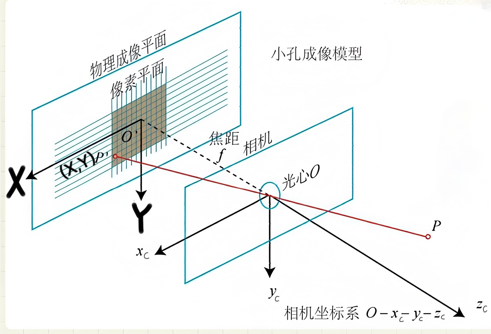
O、物理成像平面与像素平面。空间中一点
P 与光心的连线落在成像平面上，形成像点；焦距
f 是光心到平面的距离。相机坐标系的 x_c、
y_c、z_c 按图示方向取定。
针孔模型与内参
世界坐标中的点先经旋转 R 与平移 t 变换到相机
坐标系，再按针孔模型投影到像素平面。把点写成齐次坐标，整个投影可以写成
一行：
s[u,v,1]^T = K [R|t] [X,Y,Z,1]^T
其中 s 是尺度因子，等于相机坐标系中的深度
z_c；[R|t] 是 3×4 的外参矩阵；
K 是 3×3 的内参矩阵：
K = [[fx, 0, cx], [0, fy, cy], [0, 0, 1]]
fx 与 fy 是以像素为单位的焦距，分别等于
f/dx 与 f/dy，dx、dy
是单个像素在传感器上的物理尺寸。由于像素不一定是正方形，
fx 与 fy 通常不相等。把矩阵乘法展开，得到
最常用的两个式子：
u = fx * X_c / Z_c + cx，
v = fy * Y_c / Z_c + cy
(X_c, Y_c, Z_c) 是点在相机坐标系中的坐标。两式都除以
Z_c，所以同一个像素可以对应光线上任意深度的点；单张图像
缺少深度，这是由投影本身决定的。内参描述相机自身的成像比例与主点位置，
外参描述这一次拍摄时世界坐标与相机坐标的相对位姿。内参不随场景变化，
外参每换一个视角就要重新求。
一个点的完整计算
下面的程序给定内参、旋转向量、平移向量和一个世界坐标点，先算相机坐标，
再按公式算归一化坐标与像素坐标，最后用 projectPoints
核对结果，并把世界坐标轴的三条轴投影到图像上。旋转向量
rvec 的方向是旋转轴，长度是旋转角；程序用
Rodrigues 把它转成矩阵。
内参取 fx=800、fy=780、
cx=640、cy=360；旋转向量为
(0.08, -0.15, 0.03)，平移向量为
(0.05, -0.02, 2.50)，单位为米。世界点为
(0.20, -0.10, 0)。程序打印相机坐标、归一化坐标、
手算像素、projectPoints 的结果与差值，再打印世界原点
及三条坐标轴端点的像素位置。
完整程序：
#include <iomanip>
#include <iostream>
#include <vector>
#include <opencv2/core.hpp>
#include <opencv2/calib3d.hpp>
int main() {
const cv::Mat K = (cv::Mat_<double>(3, 3) <<
800.0, 0.0, 640.0,
0.0, 780.0, 360.0,
0.0, 0.0, 1.0);
const cv::Mat zero = cv::Mat::zeros(1, 5, CV_64F);
const cv::Vec3d rvec(0.08, -0.15, 0.03);
const cv::Vec3d tvec(0.05, -0.02, 2.50);
const cv::Point3f world(0.20f, -0.10f, 0.0f);
cv::Mat R;
cv::Rodrigues(rvec, R);
cv::Mat point = (cv::Mat_<double>(3, 1) <<
world.x, world.y, world.z);
cv::Mat camera = R * point;
for (int i = 0; i < 3; ++i) {
camera.at<double>(i, 0) += tvec[i];
}
const double x = camera.at<double>(0, 0);
const double y = camera.at<double>(1, 0);
const double z = camera.at<double>(2, 0);
const double fx = K.at<double>(0, 0);
const double fy = K.at<double>(1, 1);
const double cx = K.at<double>(0, 2);
const double cy = K.at<double>(1, 2);
const double u = fx * x / z + cx;
const double v = fy * y / z + cy;
std::vector<cv::Point3f> object = {world};
std::vector<cv::Point2f> projected;
cv::projectPoints(object, rvec, tvec, K, zero, projected);
std::cout << std::fixed << std::setprecision(3);
std::cout << "K =\n" << K << '\n';
std::cout << "rvec = [" << rvec[0] << ", " << rvec[1] << ", "
<< rvec[2] << "]\n";
std::cout << "tvec = [" << tvec[0] << ", " << tvec[1] << ", "
<< tvec[2] << "]\n";
std::cout << "P_world = [" << world.x << ", " << world.y << ", "
<< world.z << "]\n";
std::cout << "P_camera = [" << x << ", " << y << ", " << z << "]\n";
std::cout << "normalized = [" << x / z << ", " << y / z << "]\n";
std::cout << "pixel = (" << u << ", " << v << ")\n";
std::cout << "projectPoints = (" << projected[0].x << ", "
<< projected[0].y << ")\n";
std::cout << "difference = (" << u - projected[0].x << ", "
<< v - projected[0].y << ")\n";
const std::vector<cv::Point3f> axes = {
cv::Point3f(0.0f, 0.0f, 0.0f),
cv::Point3f(0.1f, 0.0f, 0.0f),
cv::Point3f(0.0f, 0.1f, 0.0f),
cv::Point3f(0.0f, 0.0f, 0.1f),
};
std::vector<cv::Point2f> axis_pixels;
cv::projectPoints(axes, rvec, tvec, K, zero, axis_pixels);
std::cout << "axis origin = (" << axis_pixels[0].x << ", "
<< axis_pixels[0].y << ")\n";
std::cout << "axis x = (" << axis_pixels[1].x << ", "
<< axis_pixels[1].y << ")\n";
std::cout << "axis y = (" << axis_pixels[2].x << ", "
<< axis_pixels[2].y << ")\n";
std::cout << "axis z = (" << axis_pixels[3].x << ", "
<< axis_pixels[3].y << ")\n";
return 0;
}在 示例代码 目录下编译并运行：
g++ -std=c++17 -Wall -Wextra 7.1-pinhole.cpp -o pinhole \
$(pkg-config --cflags --libs opencv4)
./pinholeK = [800, 0, 640; 0, 780, 360; 0, 0, 1] rvec = [0.080, -0.150, 0.030] tvec = [0.050, -0.020, 2.500] P_world = [0.200, -0.100, 0.000] P_camera = [0.251, -0.115, 2.522] normalized = [0.100, -0.046] pixel = (719.687, 324.480) projectPoints = (719.687, 324.480) difference = (0.000, -0.000) axis origin = (656.000, 353.760) axis x = (687.342, 354.538) axis y = (654.807, 384.770) axis z = (650.835, 351.540)
世界点 (0.20, -0.10, 0) 经 R 与
t 变换后得到相机坐标 (0.251, -0.115, 2.522)。
除以深度得到归一化坐标 (0.100, -0.046)，再乘焦距并加主点，
得到像素 (719.687, 324.480)。手算与
projectPoints 的差为 0，说明公式与 OpenCV 的约定一致。
三条坐标轴的投影方向由旋转矩阵决定，不是固定的水平或垂直方向。
世界 +x 轴端点落在原点右方，+y 轴端点落在
下方，符合相机坐标 x 向右、y 向下的约定；
+z 轴指向相机一侧，端点在图像上只移动了几个像素，这是
透视缩短造成的。轴的长度取 0.1 米，若换成别的长度，端点位置会变，
但方向仍由 R 决定。
常见错误
最常见的是轴向写反。若把世界坐标的 y 当成向上，而相机坐标
的 y 向下，同一个点会得到上下颠倒的像素；若把
z 当成指向相机外，深度符号会反，投影点会跑到图像另一侧。
检查方法是把世界原点投到图像上，再看三条轴的方向是否符合预期。
第二个错误是单位混用。物点用毫米、平移用米，投影结果会差一千倍； 棋盘格方格边长写 40 而实际是 0.04 米，标定出的平移也会差一千倍。 内参的单位是像素，外参的单位跟随物点，二者不要混在一起换算。
第三个错误是主点与像素中心的概念混淆。像素坐标的整数位置对应像素中心，
图像左上角像素的中心是 (0,0)；用图像宽高的一半当作
cx、cy 只是近似，标定得到的主点可能有几个像素
的偏差。分辨率改变时，fx、fy、cx、
cy 都要按比例缩放，不能只改图像尺寸。
第四个错误是漏掉畸变。针孔公式只描述理想投影；镜头畸变明显时，
应先把畸变参数代入，或先去畸变再套公式。标定得到 D 以后，
projectPoints 会同时处理内参、外参与畸变，手算则要自己补上
畸变那一步。
内参取 fx=800、fy=800、cx=450、
cy=350，旋转矩阵为单位矩阵，平移为零。用
projectPoints 投影两个点：(0.1, 0.2, 1.0)
与 (0.1, 0.2, -1.0)；打印两个像素坐标，并打印两个点的
深度。第二个点的深度为负，说明它在相机后方。
预期输出：
front = (530.000, 510.000) behind_center = (370.000, 190.000) front_depth = 1.000 behind_depth = -1.000
看答案
旋转为单位矩阵、平移为零时，相机坐标等于世界坐标。前一个点
Z=1，像素为 (800×0.1+450, 800×0.2+350)，
即 (530, 510)。后一个点 Z=-1，公式仍能
算出 (370, 190)，但负深度表示点在相机后方，这个像素
没有成像意义。投影前必须先判断 Z > 0。
#include <iomanip>
#include <iostream>
#include <vector>
#include <opencv2/core.hpp>
#include <opencv2/calib3d.hpp>
int main() {
const cv::Mat K = (cv::Mat_<double>(3, 3) <<
800.0, 0.0, 450.0,
0.0, 800.0, 350.0,
0.0, 0.0, 1.0);
const cv::Mat D = cv::Mat::zeros(1, 5, CV_64F);
const cv::Vec3d rvec(0.0, 0.0, 0.0);
const cv::Vec3d tvec(0.0, 0.0, 0.0);
const std::vector<cv::Point3f> points = {
cv::Point3f(0.1f, 0.2f, 1.0f),
cv::Point3f(0.1f, 0.2f, -1.0f),
};
std::vector<cv::Point2f> pixels;
cv::projectPoints(points, rvec, tvec, K, D, pixels);
std::cout << std::fixed << std::setprecision(3);
std::cout << "front = (" << pixels[0].x << ", " << pixels[0].y
<< ")\n";
std::cout << "behind_center = (" << pixels[1].x << ", "
<< pixels[1].y << ")\n";
std::cout << "front_depth = 1.000 behind_depth = -1.000\n";
return 0;
}front = (530.000, 510.000) behind_center = (370.000, 190.000) front_depth = 1.000 behind_depth = -1.000
你现在能写什么：写出四个坐标系的轴向与单位；用
K[R|t] 把一个世界点投影到像素，并解释每一步的结果；
区分内参与外参、焦距与像素焦距、主点与图像中心；检查 y
向下、z 向前、单位一致与 Z>0 这四个条件。
7.2单应与张正友标定
棋盘格是平面靶标，物点的 Z 全为零。平面到平面的投影可以
用一个 3×3 的单应矩阵描述；张正友标定正是利用多张不同
姿态的平面靶标图像，从单应矩阵中解出内参，再用最大似然细化全部参数。
本课讲清单应矩阵的形式与标定的约束，并说明这些约束如何确定内参。
平面单应性
取靶标平面为世界坐标的 Z=0 平面，投影式中的第三列乘以零后
消失，剩下
s[u,v,1]^T = K[r1 r2 t][X,Y,1]^T。把
H = K[r1 r2 t] 记作单应矩阵，它就描述了靶标平面到图像平面
的映射。齐次坐标整体乘一个非零常数不改变映射，所以 H
只有 8 个自由度；一对点给出两个方程，四对不共线的点就能确定
H。
getPerspectiveTransform 接收四对点，解 8 个线性方程，得到
唯一的 H，适合点数正好为四、且四对点都可靠的情形。
findHomography 可以接收更多点，默认用最小二乘拟合；
指定 RANSAC 后，它会反复抽样并统计内点，再只用内点重算，
适合匹配点中混有外点的情形。两者返回的都是 3×3 矩阵，
使用时把点写成齐次坐标，乘完再除以第三分量。
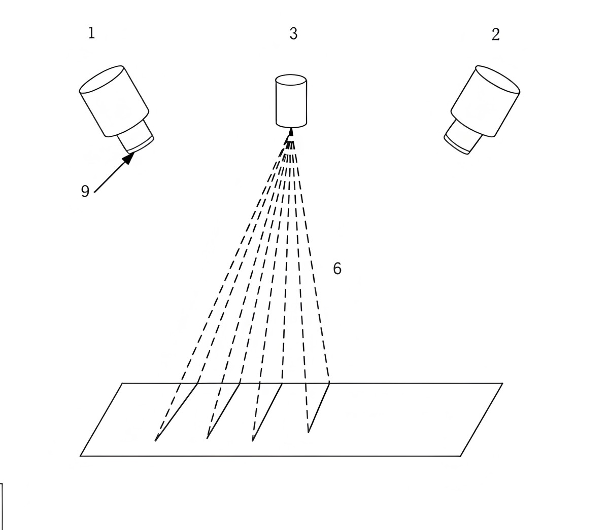
从 H 到内参
由 H = K[r1 r2 t] 可得 h1 = K r1、
h2 = K r2（都差一个尺度因子）。旋转矩阵的两列满足
r1·r2 = 0 且 |r1| = |r2| = 1，代换后得到
两个约束：
h1^T B h2 = 0，
h1^T B h1 = h2^T B h2，
其中 B = K^-T K^-1。
B 是 3×3 对称矩阵，有 6 个独立元素；整体尺度
不影响约束，真正未知的是 5 个。每个视角给出两个方程，所以至少需要
3 个不同姿态的视角。这里的“不同姿态”指靶标平面相对相机的方向要有变化；
若所有图像里靶标都正对相机，方程接近退化，解出的内参不稳定。
闭式解只是初值。张正友方法的第二步是把内参、畸变参数与每个视角的外参
放在一起，最小化所有角点的重投影误差，用最大似然或非线性最小二乘细化。
因此标定结果不只取决于单应矩阵，还取决于角点位置是否准确、视角是否
足够分散、图像是否有畸变。OpenCV 的 calibrateCamera 把这两
步合在一起，调用者只需给出物点、像点与图像尺寸。
用途与边界
单应性适合处理平面：把倾斜拍摄的地面、墙面、桌面矫正到正视平面， 把俯视相机的地面映射为鸟瞰图，或由平面标记的四角求标记相对相机的位姿。 下图左侧是普通视角下的走廊与地面四边形，右侧是把框内平面矫正后的结果； 框外的墙面、门与物体不在同一平面上，矫正后会出现明显拉伸。
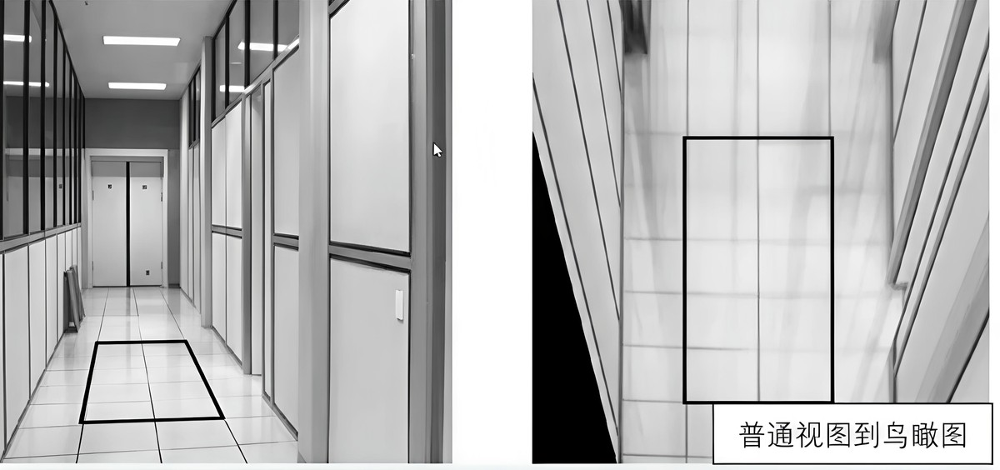
另一类用途是把倾斜拍摄的建筑立面矫正到正面。下图左侧框出立面四边形，
右侧是矫正结果；右图边缘出现黑色区域，因为源图中没有对应像素，这与
去畸变时 alpha=1 产生的黑边来源不同，但都需要裁边或填边。
四点单应性要求四个点不共线，且尽量覆盖整个平面；点过于集中时，远离
四点的区域会出现较大误差。
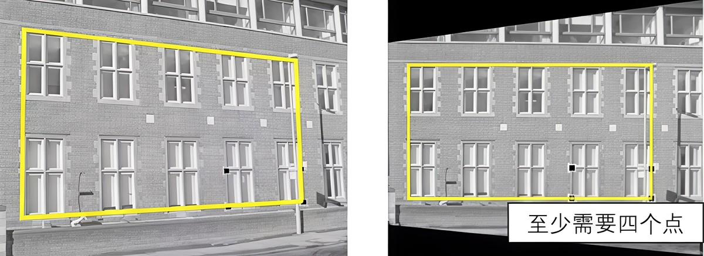
单应性不能描述有深度变化的场景。同一幅图里既有地面又有墙面时，用一个
H 只能让其中一个平面正确，另一个平面会变形。镜头畸变明显
时也应先去畸变；否则直线在图像中弯曲，平面假设与实际像素位置不一致，
求出的 H 只在局部近似成立。
把单位正方形的四个角 (0,0)、(1,0)、
(1,1)、(0,1) 映射到图像中的四边形
(100,100)、(400,120)、(380,400)、
(120,380)。用 getPerspectiveTransform 求
H，把正方形中心 (0.5,0.5) 映射过去；再手算
H 乘齐次坐标的结果，并与 findHomography
用同样四点求出的矩阵比较。
完整程序：
#include <algorithm>
#include <cmath>
#include <iomanip>
#include <iostream>
#include <vector>
#include <opencv2/core.hpp>
#include <opencv2/imgproc.hpp>
#include <opencv2/calib3d.hpp>
int main() {
const std::vector<cv::Point2f> source = {
cv::Point2f(0.0f, 0.0f),
cv::Point2f(1.0f, 0.0f),
cv::Point2f(1.0f, 1.0f),
cv::Point2f(0.0f, 1.0f),
};
const std::vector<cv::Point2f> target = {
cv::Point2f(100.0f, 100.0f),
cv::Point2f(400.0f, 120.0f),
cv::Point2f(380.0f, 400.0f),
cv::Point2f(120.0f, 380.0f),
};
const cv::Mat H = cv::getPerspectiveTransform(source, target);
std::vector<cv::Point2f> center = {cv::Point2f(0.5f, 0.5f)};
std::vector<cv::Point2f> mapped;
cv::perspectiveTransform(center, mapped, H);
const cv::Mat p = (cv::Mat_<double>(3, 1) << 0.5, 0.5, 1.0);
const cv::Mat q = H * p;
const double w = q.at<double>(2, 0);
const double manual_x = q.at<double>(0, 0) / w;
const double manual_y = q.at<double>(1, 0) / w;
cv::Mat H2 = cv::findHomography(source, target);
cv::Mat Hn = H.clone();
Hn /= Hn.at<double>(2, 2);
H2 /= H2.at<double>(2, 2);
double max_diff = 0.0;
for (int row = 0; row < 3; ++row) {
for (int col = 0; col < 3; ++col) {
max_diff = std::max(max_diff,
std::fabs(Hn.at<double>(row, col) -
H2.at<double>(row, col)));
}
}
std::cout << std::fixed << std::setprecision(3);
std::cout << "H =\n" << H << '\n';
std::cout << "center = (" << mapped[0].x << ", " << mapped[0].y
<< ")\n";
std::cout << "manual = (" << manual_x << ", " << manual_y << ")\n";
std::cout << "difference = (" << mapped[0].x - manual_x << ", "
<< mapped[0].y - manual_y << ")\n";
std::cout << std::setprecision(6);
std::cout << "findHomography max diff = " << max_diff << '\n';
return 0;
}在 示例代码 目录下编译并运行：
g++ -std=c++17 -Wall -Wextra 7.2-homography.cpp -o homography \
$(pkg-config --cflags --libs opencv4)
./homographyH = [295.6284153005465, 38.36065573770492, 100; 18.68852459016393, 338.1420765027323, 100; -0.01092896174863388, 0.1530054644808743, 1] center = (249.286, 259.949) manual = (249.286, 259.949) difference = (0.000, -0.000) findHomography max diff = 0.000000
矩阵的前两列负责旋转、缩放与错切，第三列是平移；因为源点
(0,0) 映射到 (100,100)，所以
H 的第三列前两个分量都是 100。最后一行
(-0.0109, 0.1530, 1) 描述透视，源点越远，除以第三分量
后的缩放越明显。中心 (0.5,0.5) 映射到
(249.286, 259.949)，不是四边形四个角点的算术平均，
这正是透视映射与仿射映射的区别。
手算结果与 perspectiveTransform 完全一致，说明齐次坐标
乘法与除以第三分量的步骤没有漏。四点给定时，
findHomography 与 getPerspectiveTransform
得到同一个矩阵，最大差为 0；点数多于四、且存在噪声时，两者才会因
求解方式不同而产生差别。
使用与例题相同的四对点求 H，把点
(0.25, 0.75) 映射到图像，打印 H 与映射结果。
预期输出：
H = [295.6284153005465, 38.36065573770492, 100; 18.68852459016393, 338.1420765027323, 100; -0.01092896174863388, 0.1530054644808743, 1] (0.25, 0.75) -> (182.260, 322.187)
看答案
把 (0.25, 0.75, 1) 与 H 相乘，得到齐次
坐标，再除以第三分量。该点靠近四边形左下区域，映射结果
(182.260, 322.187) 落在四边形内部。
#include <iomanip>
#include <iostream>
#include <vector>
#include <opencv2/core.hpp>
#include <opencv2/imgproc.hpp>
int main() {
const std::vector<cv::Point2f> source = {
cv::Point2f(0.0f, 0.0f), cv::Point2f(1.0f, 0.0f),
cv::Point2f(1.0f, 1.0f), cv::Point2f(0.0f, 1.0f),
};
const std::vector<cv::Point2f> target = {
cv::Point2f(100.0f, 100.0f), cv::Point2f(400.0f, 120.0f),
cv::Point2f(380.0f, 400.0f), cv::Point2f(120.0f, 380.0f),
};
const cv::Mat H = cv::getPerspectiveTransform(source, target);
const std::vector<cv::Point2f> input = {cv::Point2f(0.25f, 0.75f)};
std::vector<cv::Point2f> output;
cv::perspectiveTransform(input, output, H);
std::cout << std::fixed << std::setprecision(3);
std::cout << "H =\n" << H << '\n';
std::cout << "(0.25, 0.75) -> (" << output[0].x << ", "
<< output[0].y << ")\n";
return 0;
}H = [295.6284153005465, 38.36065573770492, 100; 18.68852459016393, 338.1420765027323, 100; -0.01092896174863388, 0.1530054644808743, 1] (0.25, 0.75) -> (182.260, 322.187)
你现在能写什么：写出平面单应性的形式与自由度；用
getPerspectiveTransform 由四对点求 H，
用 perspectiveTransform 映射点；说明
findHomography 与 RANSAC 的作用；判断一个场景是否满足
平面假设，并解释为什么先去畸变、四点不能共线。
7.3畸变模型
针孔模型假设光线沿直线传播，实际镜头会让像点偏离理想位置。偏离分为
径向与切向两类：径向畸变随点到主点的距离变化，切向畸变由镜头与传感器
不平行引起。OpenCV 把这几个系数放在一个畸变向量 D 里，
投影时先对归一化坐标施加畸变，再乘内参得到像素。
径向畸变
设理想归一化坐标为 (x, y)，r² = x² + y²。
径向畸变把点沿主点连线方向缩放：
x_d = x (1 + k1 r² + k2 r⁴ + k3 r⁶)，
y_d = y (1 + k1 r² + k2 r⁴ + k3 r⁶)
k1、k2、k3 是径向系数。
k1 < 0 时，离主点越远，缩放因子越小，像点向主点收缩，
直线向外弯，形成桶形畸变；k1 > 0 时，像点向外扩张，
形成枕形畸变。广角镜头常见桶形，长焦镜头可能出现枕形；k3
在视场很大时才明显，普通镜头常把它固定为零。
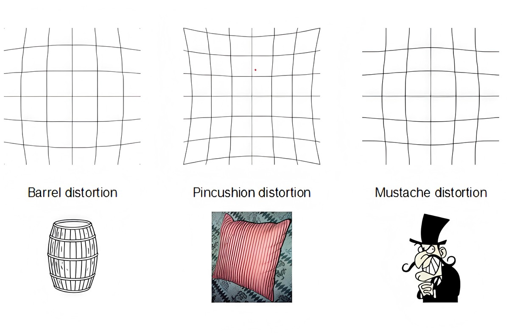
切向畸变
切向畸变由镜头光学中心与传感器平面不严格平行引起，公式为：
x_d = x + 2 p1 x y + p2 (r² + 2x²)，
y_d = y + p1 (r² + 2y²) + 2 p2 x y
p1、p2 是切向系数。它们让像点沿切向偏移，
同一半径上的偏移方向随角度变化；径向畸变只改变半径，不改变方向。
普通镜头的切向系数通常比径向系数小一个数量级以上，但在广角、短焦或
装配偏差明显的镜头上不能忽略。
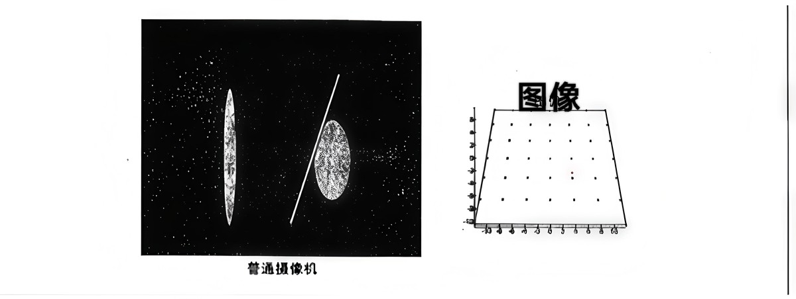
两类畸变在同一点上的方向不同。下图把理想位置、径向偏移后的位置与再
叠加切向偏移后的最终位置画在一起：径向偏移沿主点连线，切向偏移与之
垂直，最终位置是两次偏移的合成。理解这一点，才能看懂 D
中五个系数各自的作用。
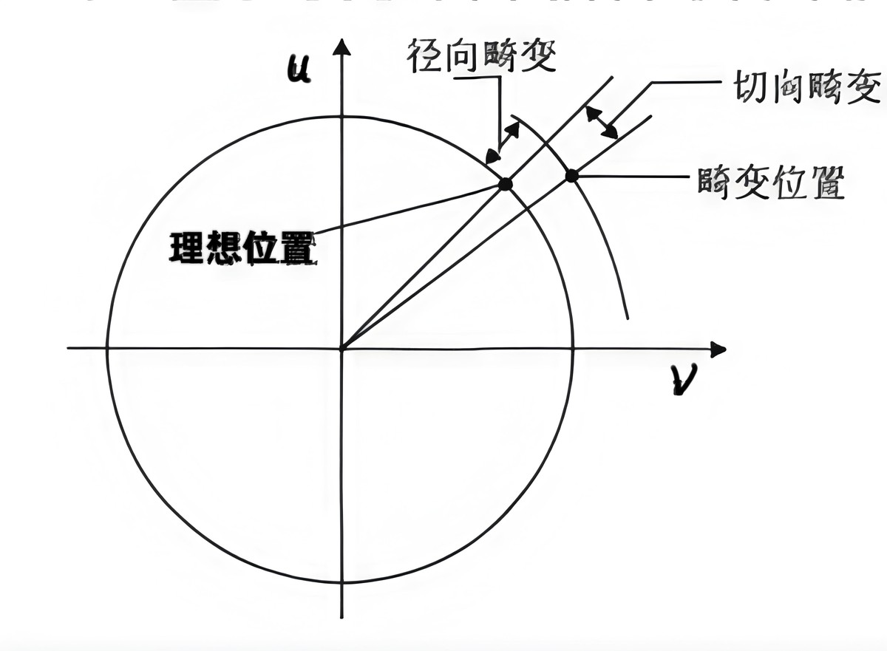
u、
v 是像素坐标轴。
归一化坐标与像素
畸变公式作用在归一化坐标上，不是直接作用在像素坐标上。完整顺序是：
世界点经外参变到相机坐标；除以 Z 得到归一化坐标
(x, y)；按上式得到 (x_d, y_d)；最后乘内参：
u = fx * x_d + cx，
v = fy * y_d + cy
OpenCV 的畸变向量按 (k1, k2, p1, p2, k3, k4, k5, k6) 排列，
常用长度是 4、5 或 8。本课的例子用 5 个参数，即
(k1, k2, p1, p2, k3)。若把公式直接套在像素坐标上，
等于把 r 当成像素距离，系数会被缩放几千倍，结果完全错误。
取 k1=-0.30、k2=0.10，其余系数为零。程序在
两幅 500×500 的图上画同一组网格：左图用理想坐标，右图
先对归一化坐标施加畸变再转成像素。程序还打印
r=0.1…0.4 时的 r、缩放因子与畸变后的
r'，并用一个点比较手算与 projectPoints。
完整程序：
#include <cmath>
#include <iomanip>
#include <iostream>
#include <vector>
#include <opencv2/core.hpp>
#include <opencv2/imgproc.hpp>
#include <opencv2/imgcodecs.hpp>
#include <opencv2/calib3d.hpp>
namespace {
cv::Point2d distort(double x, double y, double k1, double k2) {
const double r2 = x * x + y * y;
const double factor = 1.0 + k1 * r2 + k2 * r2 * r2;
return cv::Point2d(x * factor, y * factor);
}
void drawGrid(cv::Mat& panel, const cv::Mat& K, double k1, double k2,
bool apply_distortion) {
const cv::Scalar color(40, 40, 200);
for (int i = -4; i <= 4; ++i) {
const double fixed = i * 0.1;
std::vector<cv::Point> points;
for (int step = 0; step <= 80; ++step) {
const double t = -0.4 + 0.8 * step / 80.0;
cv::Point2d p = apply_distortion
? distort(fixed, t, k1, k2)
: cv::Point2d(fixed, t);
points.push_back(cv::Point(
cvRound(K.at<double>(0, 0) * p.x + K.at<double>(0, 2)),
cvRound(K.at<double>(1, 1) * p.y + K.at<double>(1, 2))));
}
cv::polylines(panel, points, false, color, 1, cv::LINE_AA);
points.clear();
for (int step = 0; step <= 80; ++step) {
const double t = -0.4 + 0.8 * step / 80.0;
cv::Point2d p = apply_distortion
? distort(t, fixed, k1, k2)
: cv::Point2d(t, fixed);
points.push_back(cv::Point(
cvRound(K.at<double>(0, 0) * p.x + K.at<double>(0, 2)),
cvRound(K.at<double>(1, 1) * p.y + K.at<double>(1, 2))));
}
cv::polylines(panel, points, false, color, 1, cv::LINE_AA);
}
cv::putText(panel, apply_distortion ? "barrel" : "ideal",
cv::Point(12, 24), cv::FONT_HERSHEY_SIMPLEX, 0.7,
cv::Scalar(30, 30, 30), 2, cv::LINE_AA);
}
} // namespace
int main() {
const double k1 = -0.30;
const double k2 = 0.10;
const cv::Mat K = (cv::Mat_<double>(3, 3) <<
600.0, 0.0, 250.0,
0.0, 600.0, 250.0,
0.0, 0.0, 1.0);
const cv::Mat D = (cv::Mat_<double>(1, 5) << k1, k2, 0.0, 0.0, 0.0);
cv::Mat canvas(500, 1000, CV_8UC3, cv::Scalar(255, 255, 255));
cv::Mat left = canvas(cv::Rect(0, 0, 500, 500));
cv::Mat right = canvas(cv::Rect(500, 0, 500, 500));
drawGrid(left, K, k1, k2, false);
drawGrid(right, K, k1, k2, true);
const bool saved = cv::imwrite("../素材/out_distortion.png", canvas);
std::cout << std::fixed << std::setprecision(4);
std::cout << "k1 = " << k1 << " k2 = " << k2 << '\n';
std::cout << "r r' delta\n";
for (const double r : {0.1, 0.2, 0.3, 0.4}) {
const double rp = r * (1.0 + k1 * r * r + k2 * r * r * r * r);
std::cout << r << " " << rp << " " << rp - r << '\n';
}
const double x = 0.3;
const double y = 0.1;
const cv::Point2d manual = distort(x, y, k1, k2);
const double manual_u = K.at<double>(0, 0) * manual.x +
K.at<double>(0, 2);
const double manual_v = K.at<double>(1, 1) * manual.y +
K.at<double>(1, 2);
std::vector<cv::Point3f> object = {cv::Point3f(
static_cast<float>(x), static_cast<float>(y), 0.0f)};
std::vector<cv::Point2f> projected;
cv::projectPoints(object, cv::Vec3d(0.0, 0.0, 0.0),
cv::Vec3d(0.0, 0.0, 0.0), K, D, projected);
std::cout << "manual pixel = (" << manual_u << ", " << manual_v
<< ")\n";
std::cout << "projectPoints = (" << projected[0].x << ", "
<< projected[0].y << ")\n";
std::cout << "difference = (" << manual_u - projected[0].x << ", "
<< manual_v - projected[0].y << ")\n";
std::cout << "saved out_distortion.png 1000x500: "
<< (saved ? "yes" : "no") << '\n';
return 0;
}在 示例代码 目录下编译并运行：
g++ -std=c++17 -Wall -Wextra 7.3-distortion.cpp -o distortion \
$(pkg-config --cflags --libs opencv4)
./distortionk1 = -0.3000 k2 = 0.1000 r r' delta 0.1000 0.0997 -0.0003 0.2000 0.1976 -0.0024 0.3000 0.2921 -0.0079 0.4000 0.3818 -0.0182 manual pixel = (424.7800, 308.2600) projectPoints = (424.7800, 308.2600) difference = (0.0000, -0.0000) saved out_distortion.png 1000x500: yes
k1 为负，缩放因子小于 1，所以每个 r' 都
小于对应的 r，差值随半径增大。半径越大，收缩越多，
网格线在边缘弯曲得越明显，这就是桶形畸变。手算像素与
projectPoints 的结果一致，说明畸变确实作用在归一化
坐标上，且内参在畸变之后才乘进去。
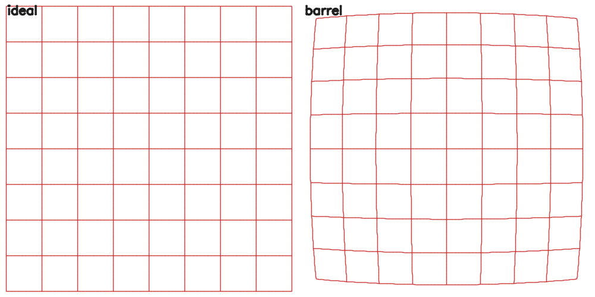
k1=-0.30、k2=0.10
后的网格。右格的边缘向内收缩，直线变弯；中心附近变化很小，因为
r 小，畸变项的高次幂更小。
常见错误
第一是符号方向。把 k1 的符号写反，桶形会变成枕形，去畸变
会越去越弯。判断符号时可以看网格：边缘向内缩为桶形，对应负的
k1；边缘向外扩为枕形，对应正的 k1。
第二是漏掉高阶项。广角镜头的视场大，k3 可能明显；只保留
k1、k2 时，图像边缘的去畸变结果仍有残余弯曲。
反之，视角少、畸变不明显时强行估计 k3，会让参数不稳定。
是否固定某一项，要看视场与标定数据，而不是固定用同一组 flag。
第三是在像素坐标上套公式。归一化坐标是无量纲的，r 通常在
0 到 1 附近；像素坐标的 r 是几百，平方后是几万，系数完全
不同。第四是把畸变中心当成图像中心；OpenCV 的模型以主点
(cx, cy) 为畸变中心，主点由标定得到，不是宽高的一半。
取 k1=0.2、k2=0.05，其余系数为零。对
r=0.1, 0.2, 0.3, 0.4, 0.5 计算缩放因子
1 + k1 r² + k2 r⁴ 与畸变后的 r'，每行打印
三个数。
预期输出：
r = 0.100000 factor = 1.002005 r' = 0.100201 r = 0.200000 factor = 1.008080 r' = 0.201616 r = 0.300000 factor = 1.018405 r' = 0.305522 r = 0.400000 factor = 1.033280 r' = 0.413312 r = 0.500000 factor = 1.053125 r' = 0.526563
看答案
k1、k2 都为正，因子大于 1，所以
r' 大于 r，对应枕形畸变。半径越大，
高次项贡献越大，因子从 1.002 增加到 1.053。
#include <iomanip>
#include <iostream>
int main() {
const double k1 = 0.2;
const double k2 = 0.05;
std::cout << std::fixed << std::setprecision(6);
for (int i = 1; i <= 5; ++i) {
const double r = 0.1 * i;
const double r2 = r * r;
const double factor = 1.0 + k1 * r2 + k2 * r2 * r2;
std::cout << "r = " << r << " factor = " << factor
<< " r' = " << r * factor << '\n';
}
return 0;
}r = 0.100000 factor = 1.002005 r' = 0.100201 r = 0.200000 factor = 1.008080 r' = 0.201616 r = 0.300000 factor = 1.018405 r' = 0.305522 r = 0.400000 factor = 1.033280 r' = 0.413312 r = 0.500000 factor = 1.053125 r' = 0.526563
你现在能写什么：写出径向与切向畸变公式；解释
k1、k2、k3、p1、
p2 的符号与作用；按“相机坐标 → 归一化 → 畸变 → 像素”的
顺序完成投影；判断桶形与枕形，并指出在像素坐标上套公式、漏掉
k3、把畸变中心当成图像中心这三类错误。
7.4棋盘格角点检测
标定的观测量是棋盘格内角点的像素位置。角点检测要解决三件事：把靶标 上的物理角点与图像中的像素一一对应，给每个角点一致的顺序，再把位置 细化到亚像素。本课用合成的棋盘图完成这三步，并检查错误尺寸下的结果。
靶标与内角点
棋盘格由黑白相间的方格组成，内角点是两个黑格与两个白格交汇的位置。
findChessboardCorners 的参数 patternSize
数的是内角点，不是方格。课程合成的棋盘有 10 列、7 行方格，内角点因此
是 9 列、6 行，参数写成 cv::Size(9, 6)。若把方格数当成
内角点数，检测会直接失败，或者返回错误数量。
检测结果按行返回，一般从靶标的一个角开始，逐行排列。不同视角下， “第一角”可能落在靶标的不同物理角上；对 180° 旋转后仍然相同的对称 靶标，单张图的位姿会存在整体转 180° 的歧义，但重投影结果不变。消除 歧义的办法是固定靶标的摆放方向，或使用非对称图案。标定时物点也必须 按相同的行列顺序生成，否则对应关系错位，重投影误差会明显增大。
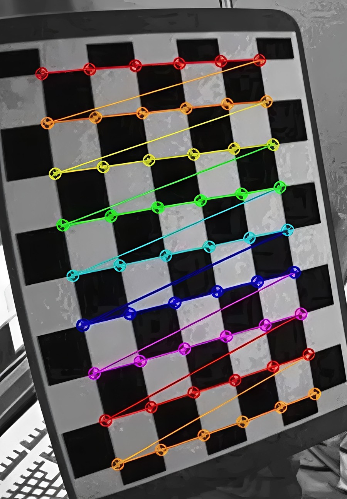
findChessboardCorners
findChessboardCorners 的输入是 8 位灰度图或彩色图，彩色图会
先转成灰度；输出是一个 std::vector<cv::Point2f>。找到时返回
true，向量长度等于 patternSize.width ×
patternSize.height；找不到时返回 false，向量可能为空，
也可能只填了一部分，使用前先看返回值。常用 flags 是
CALIB_CB_ADAPTIVE_THRESH | CALIB_CB_NORMALIZE_IMAGE，
前者用自适应阈值应对不均匀光照，后者先做亮度归一化。
棋盘必须完整出现在画面内，四周留出白边；靶标被裁掉一角、反光过强、
运动模糊或对比度不足时，检测会失败。尺寸写错也是常见原因：本课的图用
(8,6) 检测会返回 false；把行列互换写成
(6,9) 时，对称棋盘有时仍能返回 54 个点，但行列含义已经
改变，物点顺序随之错位。看到“检测成功”不能直接进入标定，先核对数量，
再用 drawChessboardCorners 画出来检查顺序。
亚像素细化
findChessboardCorners 给出的位置受像素网格限制，直接用于
标定会带来约半个像素的误差。cornerSubPix 在初值附近搜索
梯度交点，把角点细化到亚像素。它接收灰度图、角点向量、搜索窗口、
零区与终止条件，并原地修改角点向量。
搜索窗口取 cv::Size(11, 11) 时，以角点为中心在
(2×11+1)×(2×11+1)=23×23 的邻域内迭代；zeroZone 取
cv::Size(-1, -1)
表示不排除中心区域，若取正数则中心区域不参与计算，避免角点自身的
灰度值影响。终止条件用迭代次数与位移阈值共同限制，例如最多 30 次、
位移小于 0.01 像素即停止。窗口过大可能把邻近角点纳入搜索窗口，窗口过小则
在模糊图上不稳定；细化只应在检测成功之后调用。
绘制与检查
drawChessboardCorners 接收彩色图像、patternSize、
角点向量与检测结果，把每个角点画成圆圈，并按行连接。它要求图像是
三通道彩色图；传入灰度图时颜色不会正确显示。绘制结果用于检查三件事：
数量是否为 54，第一点与最后一点是否落在预期的物理角上，行的连接线
是否按同一方向排列。
读取 synth_chess_1.png，转灰度，按
(9,6) 检测角点；检测成功后做亚像素细化，打印数量、
第一点与最后一点，再把角点画到彩色图上保存。程序另外用
(8,6) 检测同一幅图，确认错误尺寸返回
false。
完整程序：
#include <iomanip>
#include <iostream>
#include <vector>
#include <opencv2/core.hpp>
#include <opencv2/imgproc.hpp>
#include <opencv2/imgcodecs.hpp>
#include <opencv2/calib3d.hpp>
int main() {
cv::Mat image = cv::imread("../素材/synth_chess_1.png");
if (image.empty()) {
std::cerr << "无法读取 synth_chess_1.png\n";
return 1;
}
cv::Mat gray;
cv::cvtColor(image, gray, cv::COLOR_BGR2GRAY);
const cv::Size pattern(9, 6);
const int flags = cv::CALIB_CB_ADAPTIVE_THRESH |
cv::CALIB_CB_NORMALIZE_IMAGE;
std::vector<cv::Point2f> corners;
const bool found = cv::findChessboardCorners(gray, pattern, corners,
flags);
std::vector<cv::Point2f> wrong;
const bool wrong_found = cv::findChessboardCorners(
gray, cv::Size(8, 6), wrong, flags);
std::cout << "image = synth_chess_1.png " << image.cols << "x"
<< image.rows << '\n';
std::cout << "pattern = " << pattern.width << "x" << pattern.height
<< " (inner corners)\n";
std::cout << "found = " << (found ? "yes" : "no") << '\n';
if (found) {
std::cout << "count = " << corners.size() << '\n';
cv::cornerSubPix(gray, corners, cv::Size(11, 11),
cv::Size(-1, -1),
cv::TermCriteria(cv::TermCriteria::COUNT +
cv::TermCriteria::EPS,
30, 0.01));
std::cout << std::fixed << std::setprecision(3);
std::cout << "first = (" << corners.front().x << ", "
<< corners.front().y << ")\n";
std::cout << "last = (" << corners.back().x << ", "
<< corners.back().y << ")\n";
cv::drawChessboardCorners(image, pattern, corners, found);
}
std::cout << "wrong 8x6 found = " << (wrong_found ? "yes" : "no")
<< '\n';
const bool saved = cv::imwrite("../素材/out_chessboard.png", image);
std::cout << "saved out_chessboard.png " << image.cols << "x"
<< image.rows << ": " << (saved ? "yes" : "no") << '\n';
return 0;
}在 示例代码 目录下编译并运行：
g++ -std=c++17 -Wall -Wextra 7.4-chessboard.cpp -o chessboard \
$(pkg-config --cflags --libs opencv4)
./chessboardimage = synth_chess_1.png 900x700 pattern = 9x6 (inner corners) found = yes count = 54 first = (309.612, 270.586) last = (596.147, 456.507) wrong 8x6 found = no saved out_chessboard.png 900x700: yes
图像为 900×700，内角点 9 列、6 行，共 54 个。细化后的
第一点为 (309.612, 270.586)，最后一点为
(596.147, 456.507)，两点都落在图像内部。用
(8,6) 检测同一幅图返回 false，说明尺寸参数
与实际内角点数不符时不会强行给出结果。
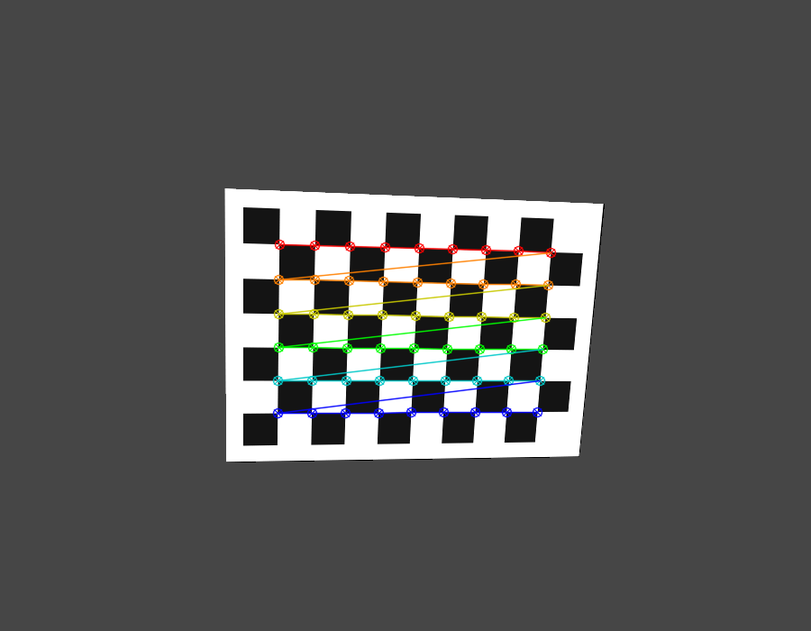
读取 synth_chess_3.png，按 (9,6) 检测内角点，
做亚像素细化，打印是否找到、角点数量、第一点与最后一点。
预期输出：
found = yes count = 54 first = (346.003, 294.129) last = (641.593, 451.296)
看答案
第三张合成棋盘的姿态与第一张不同，但仍能检测到完整的 54 个内角点。
首末点坐标随姿态变化，数量保持不变；若数量不是 54，应先检查
patternSize 与图像是否完整。
#include <iomanip>
#include <iostream>
#include <vector>
#include <opencv2/core.hpp>
#include <opencv2/imgproc.hpp>
#include <opencv2/imgcodecs.hpp>
#include <opencv2/calib3d.hpp>
int main() {
const cv::Mat image = cv::imread("../素材/synth_chess_3.png");
if (image.empty()) {
std::cerr << "无法读取 synth_chess_3.png\n";
return 1;
}
cv::Mat gray;
cv::cvtColor(image, gray, cv::COLOR_BGR2GRAY);
std::vector<cv::Point2f> corners;
const bool found = cv::findChessboardCorners(
gray, cv::Size(9, 6), corners,
cv::CALIB_CB_ADAPTIVE_THRESH | cv::CALIB_CB_NORMALIZE_IMAGE);
std::cout << "found = " << (found ? "yes" : "no") << '\n';
if (!found) {
return 1;
}
cv::cornerSubPix(gray, corners, cv::Size(11, 11), cv::Size(-1, -1),
cv::TermCriteria(cv::TermCriteria::COUNT +
cv::TermCriteria::EPS,
30, 0.01));
std::cout << std::fixed << std::setprecision(3);
std::cout << "count = " << corners.size() << '\n';
std::cout << "first = (" << corners.front().x << ", "
<< corners.front().y << ")\n";
std::cout << "last = (" << corners.back().x << ", "
<< corners.back().y << ")\n";
return 0;
}found = yes count = 54 first = (346.003, 294.129) last = (641.593, 451.296)
你现在能写什么：按内角点数设置 patternSize；在灰度
图上调用 findChessboardCorners 并检查返回值与数量；用
cornerSubPix 做亚像素细化；用
drawChessboardCorners 检查顺序；判断尺寸写错、靶标不完整、
模糊与反光造成的检测失败。
7.5calibrateCamera 与重投影误差
有了多视角的棋盘角点，就可以估计内参、畸变系数与每个视角的外参。
calibrateCamera 把这些未知量放在一起做非线性优化，
返回一个总的重投影误差。本课说明输入输出的含义、误差怎样计算，
并用一组已知参数的合成视角检查恢复结果。
输入与输出
calibrateCamera 接收两个二维向量：物点
objectPoints 与像点 imagePoints。外层下标是
视角，内层是该视角的 54 个点；两个向量的视角数相同，每个视角的点数
相同，顺序一一对应。物点通常取靶标平面上的
(col×square, row×square, 0)，单位为米或毫米；像点是检测并
细化后的像素坐标。物点的单位决定了输出平移向量的单位。
第三个参数是 imageSize，必须与拍摄时实际使用的分辨率一致。
内参矩阵 K 与畸变向量 D 是输出。默认情况下，
函数根据图像尺寸与角点重新初始化 K，调用前传入的值不参与
优化；D 由函数按标志与当前版本初始化。设置
CALIB_USE_INTRINSIC_GUESS 后，传入的 K 才作为
初值并继续优化，结果仍会写回 K。稳妥的写法是传入空矩阵，
让函数自己初始化。rvecs 与 tvecs 是输出，
每个视角一组，表示靶标坐标到相机坐标的变换。函数返回总的重投影
RMS，单位为像素。
flags 控制哪些参数固定。CALIB_FIX_K3 把
k3 固定为零，CALIB_ZERO_TANGENT_DIST 把
p1、p2 固定为零；视角少或畸变不明显时，
这样可以减少未知量、避免过拟合。CALIB_USE_INTRINSIC_GUESS
表示把传入的 K 当作初值继续优化，结果仍会写回
K；若确实知道主点或焦距，可以再配合
CALIB_FIX_PRINCIPAL_POINT 等标志固定个别参数。
终止条件一般写最大迭代次数与参数变化阈值。
重投影误差
优化完成后，用估计出的 K、D 与每个视角的
rvec、tvec，把物点重新投影到图像，得到
projected；再与检测到的像点逐点求距离。所有点的距离平方
取平均后开方，就是 RMS。整体 RMS 由函数返回；逐视角计算可以得到每个
视角的误差，用于找出异常视角。误差的单位是像素，数值越小表示估计的
投影与检测点越吻合。
误差小不等于参数一定正确。视角太少、所有靶标都正对相机、参数又放得 很开时，优化器可能把噪声拟合进去，得到很小的 RMS，却给出不稳定的 焦距或畸变。检查办法包括：看每个视角的误差是否接近，看焦距与主点是否 落在合理范围，留出一两个视角不参与标定、用它们做验证。若某个视角的 误差明显大于其他视角，先检查该视角的角点顺序与清晰度，必要时删除后 重新标定。
标定流程
拍摄时准备 10 到 20 个视角，靶标在画面中的位置、距离与倾斜方向都要
有变化，让角点覆盖画面的中心与四角；所有视角都正对相机，会让内参约束
退化。靶标要平整，避免反光与运动模糊；变焦、换分辨率或重新对焦后，
内参会变化，需要重新标定。采集完成后逐个视角检测与细化角点，检查数量
与顺序，再一次性送入 calibrateCamera。
得到结果后先看整体 RMS 与逐视角误差，再决定是否删除异常视角。删除后 用剩余视角重新标定，比较两次的焦距、主点与畸变系数；若变化很大， 说明数据本身不稳定，应补拍而不是继续调参。标定结果应保存下来，与 拍摄分辨率绑定；换分辨率时要按比例缩放内参，不能直接沿用。
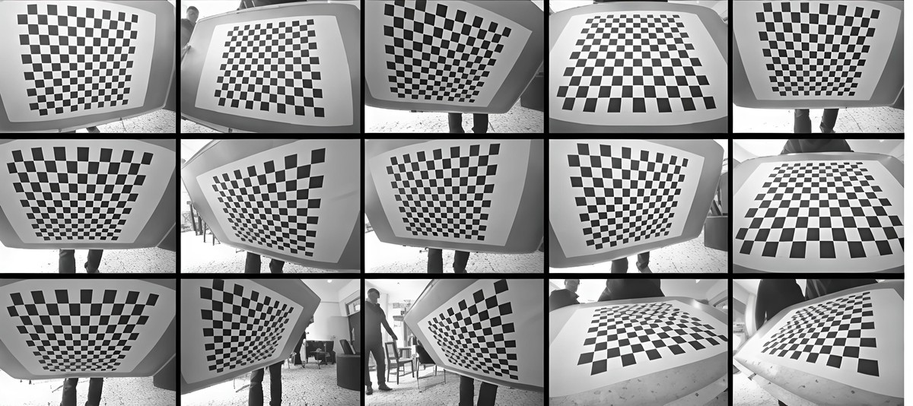
取真实内参 fx=800、fy=780、
cx=450、cy=350，畸变
k1=-0.25、k2=0.08，其余系数为零。用 8 个
不同的位姿把同一组 9×6 物点投影成像点，再把这些像点当作检测结果
送入 calibrateCamera。标定时固定 k3 与切向
系数，只估计 fx、fy、cx、
cy、k1、k2。程序打印真值与
估计值、整体 RMS、最大单视角误差与四项内参误差。
完整程序：
#include <algorithm>
#include <cmath>
#include <iomanip>
#include <iostream>
#include <vector>
#include <opencv2/core.hpp>
#include <opencv2/calib3d.hpp>
namespace {
std::vector<cv::Point3f> boardPoints() {
constexpr int cols = 9;
constexpr int rows = 6;
constexpr double square = 0.04;
std::vector<cv::Point3f> points;
for (int row = 0; row < rows; ++row) {
for (int col = 0; col < cols; ++col) {
points.push_back(cv::Point3f(
static_cast<float>(col * square),
static_cast<float>(row * square), 0.0f));
}
}
return points;
}
void printDistortion(const char* name, const cv::Mat& D) {
std::cout << name << " = [";
for (int i = 0; i < 5; ++i) {
if (i != 0) {
std::cout << ", ";
}
std::cout << D.at<double>(0, i);
}
std::cout << "]\n";
}
} // namespace
int main() {
const cv::Mat K_true = (cv::Mat_<double>(3, 3) <<
800.0, 0.0, 450.0,
0.0, 780.0, 350.0,
0.0, 0.0, 1.0);
const cv::Mat D_true = (cv::Mat_<double>(1, 5) <<
-0.25, 0.08, 0.0, 0.0, 0.0);
const cv::Size image_size(900, 700);
struct Pose {
cv::Vec3d rvec;
cv::Vec3d tvec;
};
const Pose poses[] = {
{cv::Vec3d(0.15, -0.10, 0.02), cv::Vec3d(-0.15, -0.10, 0.85)},
{cv::Vec3d(0.25, -0.20, 0.05), cv::Vec3d(-0.12, -0.08, 0.90)},
{cv::Vec3d(-0.18, 0.22, -0.04), cv::Vec3d(-0.10, -0.06, 0.95)},
{cv::Vec3d(0.30, 0.10, 0.10), cv::Vec3d(-0.20, -0.12, 0.80)},
{cv::Vec3d(-0.10, -0.28, 0.06), cv::Vec3d(-0.08, -0.04, 1.00)},
{cv::Vec3d(0.12, 0.30, -0.12), cv::Vec3d(-0.16, -0.10, 0.88)},
{cv::Vec3d(-0.24, 0.08, 0.08), cv::Vec3d(-0.14, -0.09, 0.92)},
{cv::Vec3d(0.20, -0.25, -0.06), cv::Vec3d(-0.18, -0.11, 0.86)},
};
constexpr std::size_t view_count = sizeof(poses) / sizeof(poses[0]);
const std::vector<cv::Point3f> object = boardPoints();
const std::vector<cv::Point3f> object_const = object;
std::vector<std::vector<cv::Point3f>> object_points;
std::vector<std::vector<cv::Point2f>> image_points;
for (const Pose& pose : poses) {
std::vector<cv::Point2f> projected;
cv::projectPoints(object_const, pose.rvec, pose.tvec, K_true,
D_true, projected);
object_points.push_back(object_const);
image_points.push_back(projected);
}
cv::Mat K = cv::Mat::eye(3, 3, CV_64F);
cv::Mat D = cv::Mat::zeros(1, 5, CV_64F);
std::vector<cv::Vec3d> rvecs;
std::vector<cv::Vec3d> tvecs;
const double rms = cv::calibrateCamera(
object_points, image_points, image_size, K, D, rvecs, tvecs,
cv::CALIB_FIX_K3 | cv::CALIB_ZERO_TANGENT_DIST,
cv::TermCriteria(cv::TermCriteria::COUNT + cv::TermCriteria::EPS,
100, 1e-9));
double max_view_error = 0.0;
for (std::size_t i = 0; i < view_count; ++i) {
std::vector<cv::Point2f> projected;
cv::projectPoints(object_points[i], rvecs[i], tvecs[i], K, D,
projected);
double sum = 0.0;
for (std::size_t j = 0; j < projected.size(); ++j) {
const cv::Point2f diff = projected[j] - image_points[i][j];
sum += diff.x * diff.x + diff.y * diff.y;
}
max_view_error = std::max(
max_view_error, std::sqrt(sum / projected.size()));
}
std::cout << std::fixed << std::setprecision(6);
std::cout << "views = " << view_count << " image = "
<< image_size.width << "x" << image_size.height << '\n';
std::cout << "K_true =\n" << K_true << '\n';
std::cout << "K_est =\n" << K << '\n';
printDistortion("D_true", D_true);
printDistortion("D_est", D);
std::cout << std::setprecision(8);
std::cout << "rms = " << rms << '\n';
std::cout << std::setprecision(6);
std::cout << "max_view_error = " << max_view_error << '\n';
std::cout << "fx_error = " << K.at<double>(0, 0) -
K_true.at<double>(0, 0) << '\n';
std::cout << "fy_error = " << K.at<double>(1, 1) -
K_true.at<double>(1, 1) << '\n';
std::cout << "cx_error = " << K.at<double>(0, 2) -
K_true.at<double>(0, 2) << '\n';
std::cout << "cy_error = " << K.at<double>(1, 2) -
K_true.at<double>(1, 2) << '\n';
return 0;
}在 示例代码 目录下编译并运行：
g++ -std=c++17 -Wall -Wextra 7.5-calibrate.cpp -o calibrate \
$(pkg-config --cflags --libs opencv4)
./calibrateviews = 8 image = 900x700 K_true = [800, 0, 450; 0, 780, 350; 0, 0, 1] K_est = [799.999907184659, 0, 450.0000652834597; 0, 779.9999163189425, 349.9999317069024; 0, 0, 1] D_true = [-0.250000, 0.080000, 0.000000, 0.000000, 0.000000] D_est = [-0.250000, 0.080009, 0.000000, 0.000000, 0.000000] rms = 0.00001439 max_view_error = 0.000012 fx_error = -0.000093 fy_error = -0.000084 cx_error = 0.000065 cy_error = -0.000068
合成数据没有噪声，投影关系又严格符合模型，所以恢复结果非常接近真值：
整体 RMS 为 1.439e-5 像素，最大单视角误差为
1.2e-5 像素，焦距误差约为 1e-4 像素，
k2 的估计值为 0.080009。这些数字说明优化
流程与参数顺序正确，不代表真实拍摄也能达到同样精度。真实图像存在
角点定位误差、模糊与镜头模型偏差，RMS 通常在零点几像素到一像素之间；
若明显大于这个范围，应先检查角点与视角，而不是继续增加迭代次数。
使用与例题相同的内参与畸变真值，只取前 6 个位姿做标定，仍固定
k3 与切向系数。打印整体 RMS、fx、
fy、cx、cy、k1、
k2。
预期输出：
rms = 0.000014 fx = 800.000006 fy = 780.000018 cx = 450.000028 cy = 349.999971 k1 = -0.250000 k2 = 0.080010
看答案
六个视角仍然覆盖了不同的倾斜方向，合成数据又没有噪声，因此参数 仍能恢复到小数点后多位。真实标定中减少视角会降低稳定性；这里 能恢复，是因为像点由已知模型精确生成，不说明 6 个视角总够用。
#include <iomanip>
#include <iostream>
#include <vector>
#include <opencv2/core.hpp>
#include <opencv2/calib3d.hpp>
int main() {
const cv::Mat K_true = (cv::Mat_<double>(3, 3) <<
800.0, 0.0, 450.0,
0.0, 780.0, 350.0,
0.0, 0.0, 1.0);
const cv::Mat D_true = (cv::Mat_<double>(1, 5) <<
-0.25, 0.08, 0.0, 0.0, 0.0);
std::vector<cv::Point3f> object;
for (int row = 0; row < 6; ++row) {
for (int col = 0; col < 9; ++col) {
object.push_back(cv::Point3f(
static_cast<float>(col * 0.04),
static_cast<float>(row * 0.04), 0.0f));
}
}
const cv::Vec3d rvecs_true[6] = {
{0.15, -0.10, 0.02}, {0.25, -0.20, 0.05},
{-0.18, 0.22, -0.04}, {0.30, 0.10, 0.10},
{-0.10, -0.28, 0.06}, {0.12, 0.30, -0.12},
};
const cv::Vec3d tvecs_true[6] = {
{-0.15, -0.10, 0.85}, {-0.12, -0.08, 0.90},
{-0.10, -0.06, 0.95}, {-0.20, -0.12, 0.80},
{-0.08, -0.04, 1.00}, {-0.16, -0.10, 0.88},
};
std::vector<std::vector<cv::Point3f>> object_points;
std::vector<std::vector<cv::Point2f>> image_points;
for (int i = 0; i < 6; ++i) {
std::vector<cv::Point2f> projected;
cv::projectPoints(object, rvecs_true[i], tvecs_true[i], K_true,
D_true, projected);
object_points.push_back(object);
image_points.push_back(projected);
}
cv::Mat K = cv::Mat::eye(3, 3, CV_64F);
cv::Mat D = cv::Mat::zeros(1, 5, CV_64F);
std::vector<cv::Vec3d> rvecs;
std::vector<cv::Vec3d> tvecs;
const double rms = cv::calibrateCamera(
object_points, image_points, cv::Size(900, 700), K, D, rvecs,
tvecs, cv::CALIB_FIX_K3 | cv::CALIB_ZERO_TANGENT_DIST);
std::cout << std::fixed << std::setprecision(6);
std::cout << "rms = " << rms << '\n';
std::cout << "fx = " << K.at<double>(0, 0) << '\n';
std::cout << "fy = " << K.at<double>(1, 1) << '\n';
std::cout << "cx = " << K.at<double>(0, 2) << '\n';
std::cout << "cy = " << K.at<double>(1, 2) << '\n';
std::cout << "k1 = " << D.at<double>(0, 0) << '\n';
std::cout << "k2 = " << D.at<double>(0, 1) << '\n';
return 0;
}rms = 0.000014 fx = 800.000006 fy = 780.000018 cx = 450.000028 cy = 349.999971 k1 = -0.250000 k2 = 0.080010
你现在能写什么：组织物点与像点的二维向量；设置
imageSize、内参初值、畸变初值与 flags；调用
calibrateCamera 并解释 K、D、
rvecs、tvecs；计算整体与单视角重投影误差；
判断视角不足、参数过多与异常视角。
7.6去畸变与 remap
标定得到 K 与 D 以后，可以把图像恢复到理想
针孔投影的样子。单张图可以用 undistort，连续帧可以用
initUndistortRectifyMap 预先算好映射表，再用
remap 逐帧查表。本课比较两种写法，并说明新内参与有效
区域的关系。
undistort
undistort(src, dst, K, D, newK) 对每个输出像素反算它在
源图中的位置，再做插值。输出与输入同尺寸；源图中没有对应像素的位置
填黑。第五个参数 newK 是去畸变后使用的内参，省略时沿用
K。沿用原内参时，边缘可能出现黑边，也可能把有效内容裁掉，
取决于畸变方向与强度。
控制裁剪范围用
getOptimalNewCameraMatrix(K, D, size, alpha, newSize, &roi)。
alpha=0 只保留有效像素，输出裁到有效区域，通常没有黑边；
alpha=1 保留全部源像素，输出出现黑边，roi
给出新图中仍然有效的矩形。中间值在两者之间折中。roi
是在新图坐标系中的矩形，可直接用来裁剪。
remap
initUndistortRectifyMap(K, D, R, newK, size, m1type, map1, map2)
把“输出像素到源像素”的对应关系预先算成两张映射表。R
是矫正旋转，纯去畸变时传空矩阵；m1type 取
CV_16SC2 时，map1 是两通道短整型，存放整数
坐标，map2 存放插值索引；取 CV_32FC1 时，
map1 与 map2 分别是 x、y
的浮点坐标。两种类型的结果在精度与内存上不同，查表时都把目标像素
映射回源图。
remap(src, dst, map1, map2, INTER_LINEAR) 按映射表取像素，
默认双线性插值。映射表与内参、畸变、新内参、图像尺寸以及矫正旋转
R 有关；相机与分辨率不变、R 也不变时，可以只算
一次，之后每帧复用。若换了分辨率、改了 newK、重新标定或
改了 R，映射表必须重算。单张图直接调用
undistort 更省事，连续帧用映射表避免每帧重复计算。
新内参与 ROI
本课的例子使用 1000×600 的合成网格，
fx=fy=800、cx=500、cy=300，
畸变为 (-0.35, 0.12, 0.001, -0.0005, 0)。按
alpha=0 求新内参，得到
fx=675.818、fy=758.691、
cx=499.290、cy=300.474，有效区域几乎覆盖整幅
新图；按 alpha=1 求新内参，得到
fx=630.258、fy=630.792、cx=498.994、
cy=301.338，有效区域为
(33, 52, 932, 498)，四周留下黑边。
alpha=1 的焦距更小，相当于把画面缩小，以便把源图的四角
也装进输出；黑边来自源图没有覆盖的区域。alpha=0 的焦距
更大，画面放大到只保留有效像素，因而没有黑边，但边缘内容被裁掉。
两种结果都使用同一个 K 与 D，区别只在
newK；把 alpha=0 的新内参误用于
alpha=1 的图像，会让像素位置整体偏移。
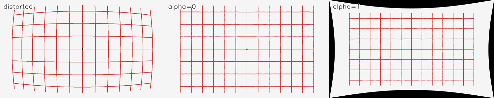
alpha=0 的结果，右格是
alpha=1 的结果。中格裁到有效区域，没有黑边；右格保留
全部源像素，四周出现黑边。三格尺寸相同，便于比较线条的弯曲程度。
读取 synth_distort.png，分别用 alpha=0 与
alpha=1 求新内参，调用 undistort 得到两幅
结果；再用 initUndistortRectifyMap 与 remap
对 alpha=0 的结果重做一遍，比较两种写法的最大差异。
程序保存三联对比图，并打印新内参、有效区域、映射表类型与一个点的
去畸变前后坐标。
完整程序：
#include <iomanip>
#include <iostream>
#include <string>
#include <vector>
#include <opencv2/core.hpp>
#include <opencv2/imgproc.hpp>
#include <opencv2/imgcodecs.hpp>
#include <opencv2/calib3d.hpp>
namespace {
void label(cv::Mat& panel, const std::string& text) {
cv::putText(panel, text, cv::Point(10, 26), cv::FONT_HERSHEY_SIMPLEX,
0.65, cv::Scalar(255, 255, 255), 3, cv::LINE_AA);
cv::putText(panel, text, cv::Point(10, 26), cv::FONT_HERSHEY_SIMPLEX,
0.65, cv::Scalar(30, 30, 30), 1, cv::LINE_AA);
}
} // namespace
int main() {
const cv::Mat source = cv::imread("../素材/synth_distort.png");
if (source.empty()) {
std::cerr << "无法读取 synth_distort.png\n";
return 1;
}
const cv::Size size = source.size();
const cv::Mat K = (cv::Mat_<double>(3, 3) <<
800.0, 0.0, 500.0,
0.0, 800.0, 300.0,
0.0, 0.0, 1.0);
const cv::Mat D = (cv::Mat_<double>(1, 5) <<
-0.35, 0.12, 0.001, -0.0005, 0.0);
cv::Rect roi0;
cv::Rect roi1;
const cv::Mat new_k0 = cv::getOptimalNewCameraMatrix(
K, D, size, 0.0, size, &roi0);
const cv::Mat new_k1 = cv::getOptimalNewCameraMatrix(
K, D, size, 1.0, size, &roi1);
cv::Mat undistorted0;
cv::Mat undistorted1;
cv::undistort(source, undistorted0, K, D, new_k0);
cv::undistort(source, undistorted1, K, D, new_k1);
cv::Mat map1;
cv::Mat map2;
cv::initUndistortRectifyMap(K, D, cv::Mat(), new_k0, size,
CV_16SC2, map1, map2);
cv::Mat remapped;
cv::remap(source, remapped, map1, map2, cv::INTER_LINEAR);
const double remap_diff = cv::norm(undistorted0, remapped,
cv::NORM_INF);
cv::Mat canvas(300, 1500, CV_8UC3, cv::Scalar(255, 255, 255));
cv::Mat panels[3];
for (int i = 0; i < 3; ++i) {
panels[i] = canvas(cv::Rect(i * 500, 0, 500, 300));
}
cv::resize(source, panels[0], panels[0].size());
cv::resize(undistorted0, panels[1], panels[1].size());
cv::resize(undistorted1, panels[2], panels[2].size());
label(panels[0], "distorted");
label(panels[1], "alpha=0");
label(panels[2], "alpha=1");
const bool saved = cv::imwrite("../素材/out_undistort.png", canvas);
std::vector<cv::Point2f> before = {cv::Point2f(200.0f, 150.0f)};
std::vector<cv::Point2f> after;
cv::undistortPoints(before, after, K, D, cv::noArray(), new_k0);
std::cout << std::fixed << std::setprecision(3);
std::cout << "image = " << size.width << "x" << size.height << '\n';
std::cout << "K_new alpha=0 =\n" << new_k0 << '\n';
std::cout << "roi alpha=0 = (" << roi0.x << ", " << roi0.y << ", "
<< roi0.width << ", " << roi0.height << ")\n";
std::cout << "K_new alpha=1 =\n" << new_k1 << '\n';
std::cout << "roi alpha=1 = (" << roi1.x << ", " << roi1.y << ", "
<< roi1.width << ", " << roi1.height << ")\n";
std::cout << "map1 = " << map1.cols << "x" << map1.rows
<< " type=" << map1.type() << " channels="
<< map1.channels() << '\n';
std::cout << std::setprecision(6);
std::cout << "undistort vs remap max diff = " << remap_diff << '\n';
std::cout << std::setprecision(3);
std::cout << "point (200, 150) -> (" << after[0].x << ", "
<< after[0].y << ")\n";
std::cout << "saved out_undistort.png 1500x300: "
<< (saved ? "yes" : "no") << '\n';
return 0;
}在 示例代码 目录下编译并运行：
g++ -std=c++17 -Wall -Wextra 7.6-undistort.cpp -o undistort \
$(pkg-config --cflags --libs opencv4)
./undistortimage = 1000x600 K_new alpha=0 = [675.8178767313838, 0, 499.2898893872309; 0, 758.6911114859562, 300.4740356240969; 0, 0, 1] roi alpha=0 = (0, 0, 999, 599) K_new alpha=1 = [630.2580320402757, 0, 498.9944323680482; 0, 630.7916441833072, 301.3382969685703; 0, 0, 1] roi alpha=1 = (33, 52, 932, 498) map1 = 1000x600 type=11 channels=2 undistort vs remap max diff = 0.000000 point (200, 150) -> (228.139, 148.069) saved out_undistort.png 1500x300: yes
undistort 与 remap 的最大差为 0，说明映射表
的坐标与插值方式一致。映射表为 1000×600、
type() 等于 11、两通道；CV_16SC2 的通道数
是 2，类型编号由深度与通道数共同决定。点
(200, 150) 在新内参下映射到
(228.139, 148.069)，横向移动明显，纵向变化较小，这与
畸变在边缘更强、中心更弱的分布一致。
使用与例题相同的内参与畸变，图像尺寸 1000×600，取
alpha=1 求新内参与有效区域；用
undistortPoints 把点 (200,150) 映射到新内参
下的坐标，打印新内参、roi 与映射结果。
预期输出：
K_new = [630.2580320402757, 0, 498.9944323680482; 0, 630.7916441833072, 301.3382969685703; 0, 0, 1] roi = (33, 52, 932, 498) (200, 150) -> (246.123, 174.626)
看答案
alpha=1 的焦距比原内参小，画面整体缩小，
roi 只覆盖中间的有效区域。点 (200,150)
在新内参下映射为 (246.123, 174.626)；与例题中
alpha=0 的结果不同，原因是两次使用的新内参不同，
不是去畸变公式不同。
#include <iomanip>
#include <iostream>
#include <vector>
#include <opencv2/core.hpp>
#include <opencv2/calib3d.hpp>
int main() {
const cv::Mat K = (cv::Mat_<double>(3, 3) <<
800.0, 0.0, 500.0,
0.0, 800.0, 300.0,
0.0, 0.0, 1.0);
const cv::Mat D = (cv::Mat_<double>(1, 5) <<
-0.35, 0.12, 0.001, -0.0005, 0.0);
const cv::Size size(1000, 600);
cv::Rect roi;
const cv::Mat new_k = cv::getOptimalNewCameraMatrix(K, D, size, 1.0,
size, &roi);
std::vector<cv::Point2f> before = {cv::Point2f(200.0f, 150.0f)};
std::vector<cv::Point2f> after;
cv::undistortPoints(before, after, K, D, cv::noArray(), new_k);
std::cout << std::fixed << std::setprecision(3);
std::cout << "K_new =\n" << new_k << '\n';
std::cout << "roi = (" << roi.x << ", " << roi.y << ", "
<< roi.width << ", " << roi.height << ")\n";
std::cout << "(200, 150) -> (" << after[0].x << ", "
<< after[0].y << ")\n";
return 0;
}K_new = [630.2580320402757, 0, 498.9944323680482; 0, 630.7916441833072, 301.3382969685703; 0, 0, 1] roi = (33, 52, 932, 498) (200, 150) -> (246.123, 174.626)
你现在能写什么：用 undistort 处理单张图；用
getOptimalNewCameraMatrix 选择 alpha 并解释
黑边与裁剪；用 initUndistortRectifyMap 与
remap 复用映射表；区分新内参与原内参，说明映射表类型与
重建条件。
7.7solvePnP、投影与 AR
标定给出相机的内参与畸变，solvePnP 进一步由若干对三维物点
与二维像点求这一次拍摄的外参。得到位姿以后，可以把三维坐标轴、立方体
或虚拟物体投影到图像上，形成增强现实式的叠加。本课用一块合成棋盘靶标
求位姿，画出坐标轴与立方体，并检查重投影误差。
问题与输入
solvePnP 的输入是物点 objectPoints、像点
imagePoints、内参 K 与畸变 D。
物点用靶标坐标表示，像点是这些物点在图像中的像素位置；两边的点数与
顺序必须一一对应。函数输出旋转向量 rvec 与平移向量
tvec，它们描述靶标坐标到相机坐标的变换：
X_c = R X_object + t。
solvePnP 至少需要 4 对点。平面靶标的 4 个点会带来位姿的
二义性：可能存在两组不同的位姿，投影结果都接近给定的像点；
SOLVEPNP_IPPE 会求出平面情形的解，solvePnPGeneric
可以同时返回多个候选。点数增加、分布展开、避免四点共线，都能降低
选错解的概率。物点的单位决定 tvec 的单位：棋盘方格写成
0.04 米，tvec 就是米；写成 40 毫米，tvec
就是毫米。
方法与 flags
solvePnP 的最后一个参数选择解法。
SOLVEPNP_ITERATIVE 是默认值，用迭代最小化重投影误差，
可以用 useExtrinsicGuess 把传入的 rvec、
tvec 当作初值；SOLVEPNP_EPNP 适合非平面点集；
SOLVEPNP_IPPE 针对平面点集；SOLVEPNP_IPPE_SQUARE
针对正方形标记，利用四个角的固定顺序；SOLVEPNP_SQPNP
是不需要初值的通用解法。方法选错不一定会报错，但可能给出不稳定或
错误分支的结果，平面靶标优先用 IPPE 或 ITERATIVE。
旋转向量与旋转矩阵可以互相转换。旋转向量的方向是旋转轴，长度是旋转
角，单位为弧度；Rodrigues(rvec, R) 得到 3×3
旋转矩阵，Rodrigues(R, rvec) 反向转换。旋转矩阵的列是
靶标三条轴在相机坐标中的方向，平移向量是靶标原点在相机坐标中的位置。
相机光心在世界坐标中的位置是 C = -R^T t，不是
t 本身，这一点在放置虚拟物体时经常用到。
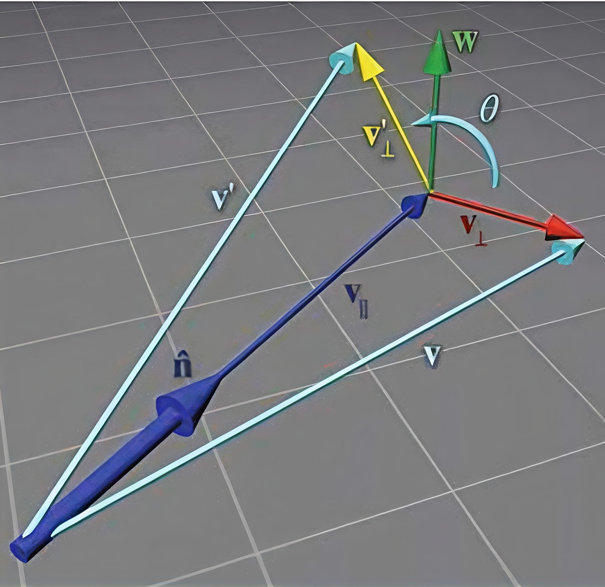
n，长度是角 θ。向量 v 绕轴
旋转后得到 v'；分解图给出平行与垂直分量的关系，
Rodrigues 公式由此得到旋转矩阵。
重投影与 AR
求到位姿后，用 projectPoints(objectPoints, rvec, tvec, K, D,
projected) 把物点重新投影，逐点比较 projected 与
输入像点，得到重投影误差。误差大时先检查点序、单位与畸变是否传入，
再检查是否选错了平面解。误差只是必要条件：平面二义性下两组位姿都
可能给出很小的误差，需要用额外的点或已知的物理约束排除。
画坐标轴时，把原点与三条轴端点作为物点一起投影，再用
line 连接。OpenCV 的颜色顺序是 BGR，红色写
Scalar(0,0,255)，绿色写 Scalar(0,255,0)，
蓝色写 Scalar(255,0,0)。画立方体时把 8 个顶点投影，连接
12 条棱；line 不做深度测试，背面的棱会透过正面显示，
形成线框。若要看起来像实心物体，需要按面到相机的距离排序，先画远面
再画近面，或使用带深度缓冲的渲染器。
增强现实的典型流程是：检测平面标记的四个角，求单应性或直接求位姿， 在靶标坐标中放置虚拟物体，把物体顶点投影到图像，最后按深度顺序叠加。 标记检测失败、位姿抖动或遮挡都会让虚拟物体漂移；连续视频中通常还要 对位姿做平滑，并保留丢失后的重置条件。
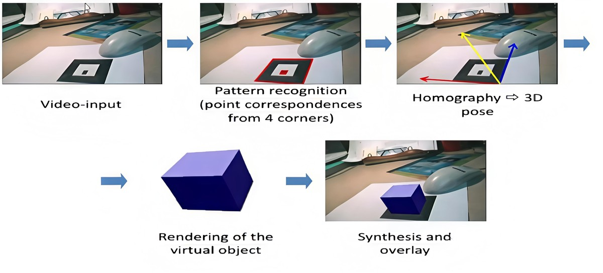
常见错误
第一是点数不足或点序错位。少于 4 对点无法确定位姿；物点与像点顺序
错一个，重投影误差会突然变大，位姿也会翻转。第二是单位不一致：
物点用米、平移按毫米解释，或棋盘方格边长写错，都会让 tvec
差一个数量级。第三是忽略畸变：projectPoints 与
solvePnP 都要传入同一个 D，只给内参不给畸变，
边缘点的误差会明显增大。
第四是平面二义性。四个共面点可能对应两组位姿，单看误差无法区分；
增加不共面的点、改变靶标姿态或使用非对称标记可以消除。第五是把
tvec 当成相机位置；它表示靶标原点到相机的平移，相机
光心要用 -R^T t 计算。第六是轴向约定：OpenCV 的
y 向下、z 向前，按 y 向上的
习惯摆放虚拟物体，叠加结果会上下颠倒。
取与合成棋盘一致的内参 fx=fy=800、cx=450、
cy=350，畸变为零；真实位姿为
rvec=(0.20, -0.15, 0.03)、tvec=(-0.18, -0.12, 0.80)。
用 54 个物点投影出像点，再调用
solvePnP(..., SOLVEPNP_ITERATIVE) 恢复位姿。程序打印真值、
估计值、旋转与平移差、重投影 RMS，并在棋盘图上画三条坐标轴与一个
线框立方体，保存为 out_pnp.png。
完整程序：
#include <algorithm>
#include <cmath>
#include <iomanip>
#include <iostream>
#include <vector>
#include <opencv2/core.hpp>
#include <opencv2/imgproc.hpp>
#include <opencv2/imgcodecs.hpp>
#include <opencv2/calib3d.hpp>
namespace {
std::vector<cv::Point3f> boardPoints() {
constexpr int cols = 9;
constexpr int rows = 6;
constexpr double square = 0.04;
std::vector<cv::Point3f> points;
for (int row = 0; row < rows; ++row) {
for (int col = 0; col < cols; ++col) {
points.push_back(cv::Point3f(
static_cast<float>(col * square),
static_cast<float>(row * square), 0.0f));
}
}
return points;
}
double vectorNorm(const cv::Vec3d& v) {
return std::sqrt(v[0] * v[0] + v[1] * v[1] + v[2] * v[2]);
}
} // namespace
int main() {
const cv::Mat K = (cv::Mat_<double>(3, 3) <<
800.0, 0.0, 450.0,
0.0, 800.0, 350.0,
0.0, 0.0, 1.0);
const cv::Mat D = cv::Mat::zeros(1, 5, CV_64F);
const cv::Vec3d rvec_true(0.20, -0.15, 0.03);
const cv::Vec3d tvec_true(-0.18, -0.12, 0.80);
const std::vector<cv::Point3f> object = boardPoints();
std::vector<cv::Point2f> image_points;
cv::projectPoints(object, rvec_true, tvec_true, K, D, image_points);
cv::Vec3d rvec;
cv::Vec3d tvec;
cv::solvePnP(object, image_points, K, D, rvec, tvec, false,
cv::SOLVEPNP_ITERATIVE);
std::vector<cv::Point2f> reprojected;
cv::projectPoints(object, rvec, tvec, K, D, reprojected);
double sum = 0.0;
for (std::size_t i = 0; i < reprojected.size(); ++i) {
const cv::Point2f diff = reprojected[i] - image_points[i];
sum += diff.x * diff.x + diff.y * diff.y;
}
const double rms = std::sqrt(sum / reprojected.size());
cv::Mat image = cv::imread("../素材/synth_chess_1.png");
if (image.empty()) {
std::cerr << "无法读取 synth_chess_1.png\n";
return 1;
}
const std::vector<cv::Point3f> axes = {
cv::Point3f(0.0f, 0.0f, 0.0f),
cv::Point3f(0.08f, 0.0f, 0.0f),
cv::Point3f(0.0f, 0.08f, 0.0f),
cv::Point3f(0.0f, 0.0f, 0.08f),
};
std::vector<cv::Point2f> axis_pixels;
cv::projectPoints(axes, rvec, tvec, K, D, axis_pixels);
cv::line(image, axis_pixels[0], axis_pixels[1], cv::Scalar(0, 0, 255),
3, cv::LINE_AA);
cv::line(image, axis_pixels[0], axis_pixels[2], cv::Scalar(0, 255, 0),
3, cv::LINE_AA);
cv::line(image, axis_pixels[0], axis_pixels[3], cv::Scalar(255, 0, 0),
3, cv::LINE_AA);
std::vector<cv::Point3f> cube;
for (const double z : {0.05, 0.09}) {
for (const double dx : {-0.02, 0.02}) {
for (const double dy : {-0.02, 0.02}) {
cube.push_back(cv::Point3f(
static_cast<float>(0.18 + dx),
static_cast<float>(0.12 + dy),
static_cast<float>(z)));
}
}
}
std::vector<cv::Point2f> cube_pixels;
cv::projectPoints(cube, rvec, tvec, K, D, cube_pixels);
const int edges[12][2] = {
{0, 1}, {1, 3}, {3, 2}, {2, 0},
{4, 5}, {5, 7}, {7, 6}, {6, 4},
{0, 4}, {1, 5}, {2, 6}, {3, 7},
};
for (const auto& edge : edges) {
cv::line(image, cube_pixels[edge[0]], cube_pixels[edge[1]],
cv::Scalar(255, 0, 255), 2, cv::LINE_AA);
}
const bool saved = cv::imwrite("../素材/out_pnp.png", image);
std::cout << std::fixed << std::setprecision(4);
std::cout << "rvec_true = [" << rvec_true[0] << ", " << rvec_true[1]
<< ", " << rvec_true[2] << "]\n";
std::cout << "rvec_est = [" << rvec[0] << ", " << rvec[1] << ", "
<< rvec[2] << "]\n";
std::cout << "tvec_true = [" << tvec_true[0] << ", " << tvec_true[1]
<< ", " << tvec_true[2] << "]\n";
std::cout << "tvec_est = [" << tvec[0] << ", " << tvec[1] << ", "
<< tvec[2] << "]\n";
std::cout << std::setprecision(6);
std::cout << "rotation_diff = " << vectorNorm(rvec - rvec_true) << '\n';
std::cout << "translation_diff = "
<< vectorNorm(tvec - tvec_true) << '\n';
std::cout << "rms = " << rms << '\n';
std::cout << "saved out_pnp.png " << image.cols << "x" << image.rows
<< ": " << (saved ? "yes" : "no") << '\n';
return 0;
}在 示例代码 目录下编译并运行：
g++ -std=c++17 -Wall -Wextra 7.7-pnp.cpp -o pnp \
$(pkg-config --cflags --libs opencv4)
./pnprvec_true = [0.2000, -0.1500, 0.0300] rvec_est = [0.2000, -0.1500, 0.0300] tvec_true = [-0.1800, -0.1200, 0.8000] tvec_est = [-0.1800, -0.1200, 0.8000] rotation_diff = 0.000000 translation_diff = 0.000000 rms = 0.000007 saved out_pnp.png 900x700: yes
输入像点由真实位姿精确生成，没有噪声，因此估计值与真值在打印精度内
完全一致：旋转差与平移差都是 0，重投影 RMS 为
7e-6 像素。坐标轴原点落在棋盘左上角，红色为
+x，绿色为 +y，蓝色为 +z；
+y 在图像中向下，符合相机坐标约定。立方体放在棋盘上方
的靶标坐标中，投影后呈线框；背面的棱没有被遮挡，因为
line 不做深度测试。
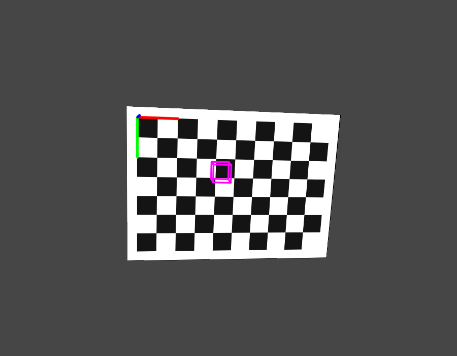
solvePnP 得到的位姿。原点处的红、绿、蓝三条线分别
是靶标坐标的 +x、+y、+z 轴；
品红色线框是放在靶标坐标中的立方体。坐标轴与立方体的位置随位姿
变化，棋盘本身保持原图不变。
只取平面靶标的四个角点，物点为 (0,0,0)、
(0.32,0,0)、(0.32,0.20,0)、
(0,0.20,0)，用真实位姿
rvec=(0.20,-0.15,0.03)、tvec=(-0.18,-0.12,0.80)
生成像点，调用 solvePnP 的 SOLVEPNP_IPPE
解法恢复位姿，打印 rvec、tvec 与重投影 RMS。
预期输出：
rvec = [0.2000, -0.1500, 0.0300] tvec = [-0.1800, -0.1200, 0.8000] rms = 0.000000
看答案
四个角点共面，IPPE 直接按平面情形求解；在没有噪声时恢复到真值， 重投影误差为 0。实际图像中四个点的定位误差会让位姿出现抖动， 平面二义性也可能让解跳到另一组位姿，因此通常会用更多点并检查 重投影误差。
#include <cmath>
#include <iomanip>
#include <iostream>
#include <vector>
#include <opencv2/core.hpp>
#include <opencv2/calib3d.hpp>
int main() {
const cv::Mat K = (cv::Mat_<double>(3, 3) <<
800.0, 0.0, 450.0,
0.0, 800.0, 350.0,
0.0, 0.0, 1.0);
const cv::Mat D = cv::Mat::zeros(1, 5, CV_64F);
const std::vector<cv::Point3f> object = {
cv::Point3f(0.0f, 0.0f, 0.0f),
cv::Point3f(0.32f, 0.0f, 0.0f),
cv::Point3f(0.32f, 0.20f, 0.0f),
cv::Point3f(0.0f, 0.20f, 0.0f),
};
const cv::Vec3d rvec_true(0.20, -0.15, 0.03);
const cv::Vec3d tvec_true(-0.18, -0.12, 0.80);
std::vector<cv::Point2f> image_points;
cv::projectPoints(object, rvec_true, tvec_true, K, D, image_points);
cv::Vec3d rvec;
cv::Vec3d tvec;
cv::solvePnP(object, image_points, K, D, rvec, tvec, false,
cv::SOLVEPNP_IPPE);
std::vector<cv::Point2f> reprojected;
cv::projectPoints(object, rvec, tvec, K, D, reprojected);
double sum = 0.0;
for (std::size_t i = 0; i < reprojected.size(); ++i) {
const cv::Point2f diff = reprojected[i] - image_points[i];
sum += diff.x * diff.x + diff.y * diff.y;
}
const double rms = std::sqrt(sum / reprojected.size());
std::cout << std::fixed << std::setprecision(4);
std::cout << "rvec = [" << rvec[0] << ", " << rvec[1] << ", "
<< rvec[2] << "]\n";
std::cout << "tvec = [" << tvec[0] << ", " << tvec[1] << ", "
<< tvec[2] << "]\n";
std::cout << std::setprecision(6);
std::cout << "rms = " << rms << '\n';
return 0;
}rvec = [0.2000, -0.1500, 0.0300] tvec = [-0.1800, -0.1200, 0.8000] rms = 0.000000
你现在能写什么：组织物点与像点调用 solvePnP；
选择 ITERATIVE、EPNP 或 IPPE；用 Rodrigues 转换旋转向量与
矩阵；计算重投影 RMS；把坐标轴与线框立方体投影到图像；判断点数不足、
点序错位、单位不一致、忽略畸变与平面二义性。
7.8深度图与点云投影
深度图给每个像素一个深度值，点云给每个点一个三维坐标；两者可以互相
转换。把点云投影到图像，用的仍是针孔模型，只是输入从棋盘角点换成了
任意三维点。本课说明深度与点云的表示、投影与反投影、无效点与遮挡，
并用一团合成点云检查手写投影与 projectPoints 是否一致。
深度图与点云
深度图是单通道图像，每个像素存放该方向上的深度，单位常为毫米或米。
数值 0 通常表示无效：深度相机没有返回、被遮挡、超出量程或表面反光。
深度值一般指沿光轴的 Z，不是点到光心的欧氏距离；只有
在图像中心附近，两者才近似相等。若深度图已经与彩色图配准，同一像素
坐标在两个图中对应同一个方向，可以直接组合成 (X,Y,Z)。
点云是一组三维点。按图像行列组织的点云叫有序点云，可以用
(u,v) 直接索引；没有图像结构的叫无序点云，只能逐点遍历。
本课用 std::vector<cv::Point3f> 存无序点云，不引入
额外的点云库。每个点还可以带颜色，颜色通常取自对应像素的 BGR 值。
投影公式
设点在相机坐标系中的坐标为 (X_c, Y_c, Z_c)，投影公式与
针孔模型相同：
u = fx * X_c / Z_c + cx，
v = fy * Y_c / Z_c + cy
使用前必须确认 Z_c > 0；Z_c = 0 会除零，
Z_c < 0 表示点在相机后方，算出的像素没有成像意义。
有畸变时，先把归一化坐标按畸变模型偏移，再乘内参；
projectPoints 会自动完成这一步，手写公式只适用于
D 为零或已经去畸变的情形。
反投影由像素与深度恢复三维点：
X = (u - cx) * Z / fx，
Y = (v - cy) * Z / fy，
Z = depth。反投影同样假设像素已经去畸变；若直接使用
畸变图像的像素，得到的射线方向会偏。深度图与彩色图来自不同相机时，
还要用外参把点变换到同一坐标系，并处理时间同步。
无效点、遮挡与 ROI
投影前先过滤无效深度：深度小于等于零、NaN、落在深度空洞里
的点都不参与统计或绘制。无效深度值常用 0 表示，它是深度数值，不是像素
坐标；图像左上角的 (0,0) 仍然是合法像素。过滤后再投影，
记录三类数量：有效投影点数、无效深度点数、投影落到图像外的点数，
三者之和应等于总点数，便于核对循环是否漏点。
多个点投影到同一像素时，离相机最近的点应当遮住后面的点，这就是
z-buffer。逐点画圆不做深度测试，后画的点会覆盖先画的点；若点云有
表面结构，应按深度从远到近排序，再依次绘制，近似画家算法。ROI 深度
均值要先排除零值，再用 double 累加，最后除以有效点数；
用整数累加会丢精度，除以总像素数则会把无效点算进平均。
彩色图与深度图来自不同传感器时，两者的采样时刻与视场都不同。直接 按同名像素组合，会把不同方向的颜色与深度配在一起；需要先做时间同步， 再用外参把深度点变换到彩色相机坐标系，最后投影到彩色图像。坐标系 对齐错误表现为颜色边缘与深度边缘整体错位，而不是零散的噪声。
生成 25×25 的网格点，x、y 在
±0.48 米内，z 在 1.2 米附近按
正弦起伏；再追加 10 个 z=-0.5 的点，模拟相机后方的
无效点。内参取 fx=fy=600、cx=450、
cy=300，外参为
rvec=(0.15,-0.20,0.05)、tvec=0。程序逐点
做外参变换与手写投影，跳过 Z<=0 与落在图像外的点，
按深度着色绘制，再用 projectPoints 对有效点重算一遍，
比较两种投影的最大差。
完整程序：
#include <algorithm>
#include <cmath>
#include <iomanip>
#include <iostream>
#include <vector>
#include <opencv2/core.hpp>
#include <opencv2/imgproc.hpp>
#include <opencv2/imgcodecs.hpp>
#include <opencv2/calib3d.hpp>
int main() {
std::vector<cv::Point3f> cloud;
for (int row = 0; row < 25; ++row) {
for (int col = 0; col < 25; ++col) {
const double x = (col - 12) * 0.04;
const double y = (row - 12) * 0.04;
const double z = 1.2 + 0.15 * std::sin(0.4 * col) *
std::cos(0.3 * row);
cloud.push_back(cv::Point3f(
static_cast<float>(x), static_cast<float>(y),
static_cast<float>(z)));
}
}
for (int i = 0; i < 10; ++i) {
cloud.push_back(cv::Point3f(
static_cast<float>(-0.4 + 0.08 * i),
static_cast<float>(0.1 * i), -0.5f));
}
const cv::Mat K = (cv::Mat_<double>(3, 3) <<
600.0, 0.0, 450.0,
0.0, 600.0, 300.0,
0.0, 0.0, 1.0);
const cv::Vec3d rvec(0.15, -0.20, 0.05);
const cv::Vec3d tvec(0.0, 0.0, 0.0);
cv::Mat R;
cv::Rodrigues(rvec, R);
const double fx = K.at<double>(0, 0);
const double fy = K.at<double>(1, 1);
const double cx = K.at<double>(0, 2);
const double cy = K.at<double>(1, 2);
int invalid_z = 0;
int outside = 0;
int drawn = 0;
double depth_sum = 0.0;
double max_diff = 0.0;
std::vector<cv::Point3f> valid_points;
std::vector<cv::Point2f> manual_pixels;
cv::Mat image(600, 900, CV_8UC3, cv::Scalar(30, 30, 30));
for (const cv::Point3f& p : cloud) {
const double x = R.at<double>(0, 0) * p.x +
R.at<double>(0, 1) * p.y +
R.at<double>(0, 2) * p.z + tvec[0];
const double y = R.at<double>(1, 0) * p.x +
R.at<double>(1, 1) * p.y +
R.at<double>(1, 2) * p.z + tvec[1];
const double z = R.at<double>(2, 0) * p.x +
R.at<double>(2, 1) * p.y +
R.at<double>(2, 2) * p.z + tvec[2];
if (z <= 0.0) {
++invalid_z;
continue;
}
const double u = fx * x / z + cx;
const double v = fy * y / z + cy;
if (u < 0.0 || u >= image.cols || v < 0.0 ||
v >= image.rows) {
++outside;
continue;
}
valid_points.push_back(p);
manual_pixels.push_back(cv::Point2f(
static_cast<float>(u), static_cast<float>(v)));
depth_sum += z;
const double t = std::min(1.0, std::max(0.0, (z - 1.0) / 0.6));
const cv::Scalar color(255.0 * (1.0 - t), 80, 255.0 * t);
cv::circle(image, cv::Point(cvRound(u), cvRound(v)), 2, color,
cv::FILLED, cv::LINE_AA);
++drawn;
}
std::vector<cv::Point2f> projected;
cv::projectPoints(valid_points, rvec, tvec, K,
cv::Mat::zeros(1, 5, CV_64F), projected);
for (std::size_t i = 0; i < projected.size(); ++i) {
const cv::Point2f diff = projected[i] - manual_pixels[i];
max_diff = std::max(
max_diff, std::sqrt(static_cast<double>(diff.x) * diff.x +
static_cast<double>(diff.y) * diff.y));
}
const bool saved = cv::imwrite("../素材/out_pointcloud.png", image);
const double mean_depth = drawn > 0 ? depth_sum / drawn : 0.0;
std::cout << std::fixed << std::setprecision(6);
std::cout << "points = " << cloud.size() << '\n';
std::cout << "invalid_z = " << invalid_z << '\n';
std::cout << "outside = " << outside << '\n';
std::cout << "drawn = " << drawn << '\n';
std::cout << std::setprecision(3);
std::cout << "mean_depth = " << mean_depth << '\n';
std::cout << std::setprecision(6);
std::cout << "max_pixel_diff = " << max_diff << '\n';
std::cout << "saved out_pointcloud.png " << image.cols << "x"
<< image.rows << ": " << (saved ? "yes" : "no") << '\n';
return 0;
}在 示例代码 目录下编译并运行：
g++ -std=c++17 -Wall -Wextra 7.8-pointcloud.cpp -o pointcloud \
$(pkg-config --cflags --libs opencv4)
./pointcloudpoints = 635 invalid_z = 10 outside = 72 drawn = 553 mean_depth = 1.177 max_pixel_diff = 0.000000 saved out_pointcloud.png 900x600: yes
总点数为 625 + 10 = 635。10 个后方点的
Z<=0，全部被跳过；72 个点的投影落在
900×600 图像外，也没有绘制；剩余 553 个点画出，三者
之和正好是 635。有效点的平均深度为 1.177 米，手写投影
与 projectPoints 的最大差为 0。图中蓝色点离相机近，
红色点离相机远，颜色随深度连续变化。
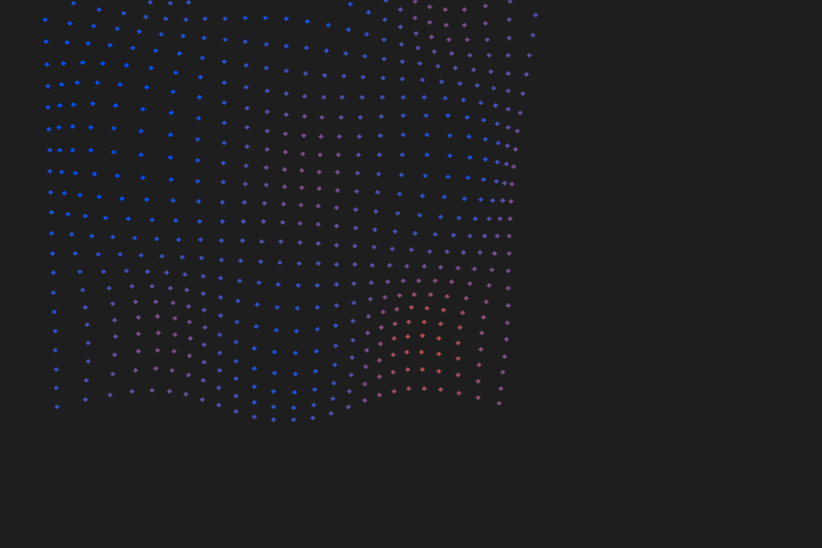
构造一幅 5×5 的 CV_32F 深度图，第
row 行、第 col 列的值取
1.0 + 0.1×row + 0.01×col，再把
(2,2) 与 (3,3) 置零表示无效。取 ROI
(1,1,3,3)，统计有效点数、均值、最小值与最大值。
预期输出：
roi = (1, 1, 3, 3) valid = 7 of 9 mean = 1.2043 min = 1.1100 max = 1.3200
看答案
ROI 覆盖 3×3 共 9 个像素，其中两个是零，有效点为 7 个。均值只对
7 个有效值求和再平均，得到 1.2043；若除以 9，结果
会偏小。最小值 1.1100 与最大值 1.3200
分别来自 ROI 的左上与右下有效点。
#include <iomanip>
#include <iostream>
#include <opencv2/core.hpp>
int main() {
cv::Mat depth(5, 5, CV_32F);
for (int row = 0; row < 5; ++row) {
for (int col = 0; col < 5; ++col) {
depth.at<float>(row, col) =
static_cast<float>(1.0 + 0.1 * row + 0.01 * col);
}
}
depth.at<float>(2, 2) = 0.0f;
depth.at<float>(3, 3) = 0.0f;
const cv::Rect roi(1, 1, 3, 3);
const cv::Mat patch = depth(roi);
double sum = 0.0;
int valid = 0;
float min_depth = 1000.0f;
float max_depth = 0.0f;
for (int row = 0; row < patch.rows; ++row) {
for (int col = 0; col < patch.cols; ++col) {
const float value = patch.at<float>(row, col);
if (value <= 0.0f) {
continue;
}
sum += value;
min_depth = std::min(min_depth, value);
max_depth = std::max(max_depth, value);
++valid;
}
}
std::cout << std::fixed << std::setprecision(4);
std::cout << "roi = (" << roi.x << ", " << roi.y << ", "
<< roi.width << ", " << roi.height << ")\n";
std::cout << "valid = " << valid << " of " << patch.total() << '\n';
std::cout << "mean = " << sum / valid << '\n';
std::cout << "min = " << min_depth << " max = " << max_depth << '\n';
return 0;
}roi = (1, 1, 3, 3) valid = 7 of 9 mean = 1.2043 min = 1.1100 max = 1.3200
你现在能写什么：说明深度图与点云的表示及单位；用
K、R、t 把点云投影到图像；
在投影前过滤 Z<=0、NaN 与出界点；
解释 z-buffer 与绘制顺序；在 ROI 内排除无效深度后求均值；指出
畸变、坐标系与时间同步造成的错位。